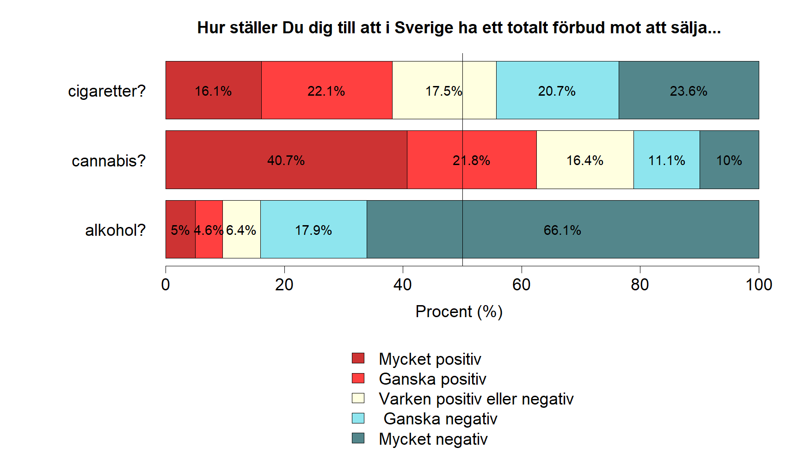

Kapitel 5 Kategorivariabler
En nödvändig färdighet vid arbete med data är att kunna hantera och analysera kategorivariabler. Vi börjar i detta kapitel med det enkla fallet binära variabler för att i ett senare övergå till att studera hur man arbetar med variabler som har fler än två kategorier.
I princip alla datamaterial innehåller variabler med kategorier och även om data inledningsvis inte innehåller kategorivariabler är det vanligt att av olika skäl omkoda kvantitativa variabler till kategorier. Kategorivariabler kan vara antingen på nominal eller ordinalskala. Dessutom är det inte ovanligt att även analysera diskreta kvantitativa variabler som om de bestod av kategorier.
För nybörjaren kan det vara förvirrande att det finns åtminstone två alternativ, som bägge är viktiga, för hur man arbetar med kategorivariabler.
- Alternativ 1. En kategorivariabel hanteras som en numerisk variabel efter att kategorierna tilldelats numeriska värden. Exempelvis kan vi för en binär variabel ange att värdena 0 och 1 representerar två kategorier. Observera att val värden påverkar hur variabeln används i analysen.
- Alternativ 2. En kategoriabel definieras med funktionen factor()som datatypen faktor. En faktors kategorier benämns i R för levels (nivåer). Fördelen med att definiera en variabel som faktor är att R kan använda information om den binära variabeln i analyser och resultat. Till exempel kan kategoriernas namn presenteras i resultat. Dessutom kräver en del metoder i R en faktor-variabel. Observera att det, av förklarliga skäl, inte går att utföra räkneoperationer på variabler definierade som datatypen faktor.
Eftersom bägge varianterna har för- och nackdelar återfinns ofta bägge varianter av kodning för en och samma binära variabel i ett dataset — en numerisk (i fallet med en binär variabel kodad 0-1 kallad för variabelnamn_bin) och version kodad som faktor (kallad variabelnamn_cat).
Vi kommer i stor utsträckning använda data för att exemplifiera och framför allt kommer nedanstående dataset användas.
- utbildning: “Vilken är din högsta avslutade utbildning?” - låg. Gymnasieutbildning eller lägre. hög. Grundexamen på universitetet eller högre.
- alder: “Hur gammal är du?” - 0. 65-79 år, 1. 50-64 år, 2. 18-49 år.
- rokare: “Röker du minst en cigarett varje vecka?” - 1. Ja, 0. Nej.
- kon: - “Vilket kön är du?” - man, kvinna
- reklam: “Anser du att TV-reklam för spel bör vara tillåtet?” - Ja, Nej, Har ej tagit ställning.
- inkomst: “Vilken är din månadsinkomst?” - inkomst kr/mån
- alkohol: “Hur ställer du dig till att i Sverige ha ett totalt förbud mot att sälja alkohol?” - 1. Mycket positiv. 2. Ganska positiv. 3. Varken positiv eller negativ. 4. Ganska negativ 5. Mycket negativ.
- cannabis: “Hur ställer du dig till att i Sverige ha ett totalt förbud mot att sälja cannabis?” - 1. Mycket positiv. 2. Ganska positiv. 3. Varken positiv eller negativ. 4. Ganska negativ 5. Mycket negativ.
- cigaretter: Hur ställer du dig till att i Sverige ha ett totalt förbud mot att sälja cigaretter?" - 1. Mycket positiv. 2. Ganska positiv. 3. Varken positiv eller negativ. 4. Ganska negativ 5. Mycket negativ.
- mat: antal inköp av mat per vecka
df <- data.frame(utbildning = c("hög", "hög", "låg", "hög", "hög", "låg", "hög", "låg", "låg", "hög", "hög","hög","hög", "hög", "hög", "låg", "hög", "hög", "hög", "hög", "hög", "hög", "hög", "hög", "hög", "låg", "hög", "hög", "hög", "låg", "hög", "hög", "låg", "hög", "hög", "hög", "låg", "låg", "hög", "låg","hög", "hög", "låg", "hög", "hög", "låg", "hög", "låg", "låg", "hög", "hög", "hög", "hög", "hög", "hög", "låg", "hög", "hög", "hög", "hög", "hög", "hög", "hög", "hög", "hög", "låg", "hög", "hög", "hög", "låg", "hög","hög", "låg", "hög", "hög", "hög", "låg", "låg", "hög","låg","låg","låg","låg","låg","låg","låg","låg","låg","låg","låg","låg","låg","låg","låg","låg","låg","låg","låg","låg","låg","låg","låg","låg","låg","låg","låg","låg","låg","låg","låg","låg","låg","låg","låg","låg","låg","låg","låg","låg","låg","låg","låg","låg","låg","låg","låg","låg","låg","låg","låg","låg","låg","låg","låg","låg","låg","låg","låg","låg","låg","hög", "hög", "låg", "hög", "hög", "låg", "hög", "låg", "låg", "hög", "hög", "hög", "hög", "hög", "hög", "låg", "hög", "hög", "hög", "hög", "hög", "hög", "hög", "hög", "hög", "låg", "hög", "hög", "hög", "låg", "hög", "hög", "låg", "hög", "hög", "hög", "låg", "låg", "hög", "låg","hög", "hög", "låg", "hög", "hög", "låg", "hög", "låg", "låg", "hög", "hög", "hög", "hög", "hög", "hög", "låg", "hög", "hög", "hög", "hög", "hög", "hög", "hög", "hög", "hög", "låg", "hög", "hög", "hög", "låg", "hög", "hög", "låg", "hög", "hög", "hög", "låg", "låg", "hög", "låg","låg","låg","låg","låg","låg","låg","låg","låg","låg","låg","låg","låg","låg","låg","låg","låg","låg","låg","låg","låg","låg","låg","låg","låg","låg","låg","låg","låg","låg","låg","låg","låg","låg","låg","låg","låg","låg","låg","låg","låg","låg","låg","låg","låg","låg","låg","låg","låg","låg","låg","låg","låg","låg","låg","låg","låg","låg","låg","låg","låg"),
alder = c(1, 0, 1, 2, 2, 1, 2, 1, 1, 1, 2, 2, 1, 2, 1, 0, 0, 1, 0, 2, 0, 1, 1, 0, 1, 0, 1, 1, 1, 1, 0, 0, 0, 2, 0, 0, 1, 0,1, 2, 1, 1, 0, 0, 1, 2, 1, 1, 1, 1, 1, 1, 1, 1, 1, 2, 2,1, 2, 1, 1, 2, 1, 0, 1, 2, 2, 1, 0, 1, 1, 0, 1, 1, 1, 1, 2, 1, 2, 1, 1, 1, 2, 2, 1, 2, 2, 0, 1, 1, 1, 2, 1, 1, 1, 0, 2, 1,2, 1, 1, 1, 0, 1, 1, 0, 1, 1, 1, 2, 2, 1, 1, 0, 0, 1, 1, 2, 2, 1, 1, 2, 0, 0, 2, 0, 2, 1, 1, 1, 1, 1, 0, 1, 2, 1, 1, 1, 0, 2, 1, 1, 1, 1, 1, 1, 0, 0, 0, 1, 1, 0, 1, 1, 0,0, 0, 1, 2, 0, 0, 1, 1, 1, 2, 0, 1, 1, 2, 1, 1,1, 1, 1, 1, 1, 1, 0, 1, 2, 2, 1, 1, 2, 0, 0, 0, 1, 1, 1, 2, 1, 1, 0, 2, 0, 1, 2, 2, 0, 1, 1, 1, 0, 2, 1, 0, 1, 0, 0, 0, 1,1, 1, 2, 1, 1, 0, 2, 1, 0, 2, 1, 2, 2, 0, 1, 1,2, 0, 1, 2, 1, 2, 1, 1, 0, 2, 1, 1, 2, 2, 2, 1, 2, 1, 1, 0, 0, 1, 1, 2, 1, 2, 1, 1, 1, 1, 2, 1, 0, 1, 2, 1, 0, 1, 2, 2, 1,0, 0, 1, 0, 0, 2, 2, 1, 1, 1, 1),
rokare = c(0, 0, 1, 0, 0, 0, 0, 0, 1, 0, 1, 0, 0, 0, 0, 0, 0, 0, 0, 1,0, 1, 1, 0, 1, 0, 1, 0, 1, 0, 1, 0, 0, 0, 0, 0, 0, 0, 0, 1,0, 1, 0, 0, 1, 0, 0, 0, 1, 0, 1, 0, 0, 0, 0, 0, 0, 0, 0, 1,0, 1, 1, 0, 1, 0, 1, 0, 1, 0, 1, 0, 0, 0, 0, 0, 0, 0, 0, 1,1,1,0,0,1,1,0,0,1,1,1,1,0,0,1,1,1,1,1,1,1,1,1,1,1,1,1,0,0,0,1,1,1,1,0,0,1,1,1,1,1,0,0,0,1,0,1,0,1,1,0,0,0,1,1,1,1,0,0,1, 0, 0, 1, 0, 0, 0, 0, 0, 1, 0, 1, 0, 0, 0, 0, 0, 0, 0, 0, 1, 0, 1, 1, 0, 1, 0, 1, 0, 1, 0, 1, 0, 0, 0, 0, 0, 0, 0, 0, 1,0, 1, 0, 0, 1, 0, 0, 0, 1, 0, 1, 0, 0, 0, 0, 0, 0, 0, 0, 1,0, 1, 1, 0, 1, 0, 1, 0, 1, 0, 1, 0, 0, 0, 0, 0, 0, 0, 0, 1,1,1,0,0,1,1,0,0,1,1,1,1,0,0,1,1,1,1,1,1,1,1,1,1,1,1,1,0,0,0,1,1,1,1,0,0,1,1,1,1,1,0,0,0,1,0,1,0,1,1,0,0,0,1,1,1,1,0,0,1),
kon = c('kvinna','kvinna','kvinna','man','man','kvinna','kvinna','kvinna','kvinna','kvinna','kvinna','kvinna','man','man','man','kvinna','man','kvinna','kvinna','man','kvinna','man','man','kvinna','kvinna','kvinna','man','man','kvinna','man','man','kvinna','kvinna','kvinna','kvinna','kvinna','man','man','man','man','kvinna','kvinna','kvinna','man','man','kvinna','man','man','kvinna','man','man','man','man','man','kvinna','kvinna','man','man','man','man','man','kvinna','kvinna','kvinna','man','kvinna','man','man','kvinna','man','kvinna','kvinna','man','kvinna','man','kvinna','man','kvinna','kvinna','kvinna','kvinna','kvinna','kvinna','kvinna','kvinna','kvinna','kvinna','man','man','kvinna','man','man','man','man','man','kvinna','man','man','man','kvinna','kvinna','kvinna','man','kvinna','man','kvinna','man','man','kvinna','kvinna','kvinna','kvinna','man','kvinna','kvinna','kvinna','kvinna','man','man','kvinna','man','man','kvinna','man','man','kvinna','kvinna','kvinna','kvinna','kvinna','kvinna','man','man','man','man','man','man','man','kvinna','kvinna','man','kvinna','kvinna','man','kvinna','kvinna','kvinna','man','kvinna','man','man','man','kvinna','man','kvinna','man','man','man','man','man','kvinna','man','man','man','man','kvinna','kvinna','man','kvinna','kvinna','kvinna','kvinna','kvinna','kvinna','man','kvinna','kvinna','kvinna','kvinna','kvinna','man','man','man','kvinna','kvinna','man','kvinna','kvinna','man','kvinna','man','kvinna','man','man','kvinna','man','kvinna','kvinna','man','man','man','man','kvinna','kvinna','kvinna','kvinna','man','man','man','man','kvinna','man','kvinna','man','man','kvinna','man','man','man','kvinna','man','man','kvinna','man','man','kvinna','man','man','man','kvinna','man','kvinna','man','man','man','kvinna','man','man','kvinna','man','kvinna','kvinna','man','kvinna','man','man','kvinna','kvinna','kvinna','man','kvinna','kvinna','kvinna','kvinna','man','kvinna','kvinna','man','kvinna','kvinna','kvinna','kvinna','man','man','kvinna','man','man','kvinna','man','kvinna','kvinna','kvinna','kvinna','man','man','man','kvinna','man','kvinna','man'),
reklam = c('Nej','Ja','Ja','Ja','Ja','Ja','Ja','Har ej tagit ställning','Ja','Nej','Nej','Ja','Nej','Ja','Ja','Nej','Har ej tagit ställning','Har ej tagit ställning','Nej','Ja','Har ej tagit ställning','Nej','Nej','Ja','Nej','Ja','Ja','Har ej tagit ställning','Ja','Har ej tagit ställning','Nej','Ja','Ja','Har ej tagit ställning','Nej','Har ej tagit ställning','Nej','Har ej tagit ställning','Har ej tagit ställning','Har ej tagit ställning','Ja','Nej','Har ej tagit ställning','Ja','Ja','Nej','Nej','Nej','Har ej tagit ställning','Ja','Har ej tagit ställning','Har ej tagit ställning','Nej','Nej','Ja','Har ej tagit ställning','Ja','Har ej tagit ställning','Har ej tagit ställning','Har ej tagit ställning','Har ej tagit ställning','Har ej tagit ställning','Nej','Nej','Ja','Ja','Har ej tagit ställning','Har ej tagit ställning','Ja','Nej','Nej','Ja','Nej','Har ej tagit ställning','Ja','Nej','Har ej tagit ställning','Nej','Nej','Nej','Har ej tagit ställning','Nej','Ja','Nej','Nej','Ja','Har ej tagit ställning','Har ej tagit ställning','Nej','Ja','Har ej tagit ställning','Ja','Ja','Nej','Nej','Ja','Ja','Ja','Har ej tagit ställning','Ja','Har ej tagit ställning','Nej','Har ej tagit ställning','Nej','Har ej tagit ställning','Ja','Nej','Ja','Har ej tagit ställning','Ja','Ja','Har ej tagit ställning','Har ej tagit ställning','Har ej tagit ställning','Nej','Har ej tagit ställning','Nej','Har ej tagit ställning','Ja','Ja','Nej','Har ej tagit ställning','Har ej tagit ställning','Har ej tagit ställning','Ja','Har ej tagit ställning','Har ej tagit ställning','Ja','Nej','Nej','Har ej tagit ställning','Ja','Ja','Ja','Nej','Ja','Har ej tagit ställning','Har ej tagit ställning','Har ej tagit ställning','Nej','Nej','Nej','Ja','Nej','Ja','Nej','Ja','Har ej tagit ställning','Nej','Nej','Ja','Ja','Nej','Nej','Har ej tagit ställning','Har ej tagit ställning','Ja','Nej','Ja','Har ej tagit ställning','Har ej tagit ställning','Har ej tagit ställning','Har ej tagit ställning','Ja','Nej','Nej','Har ej tagit ställning','Nej','Nej','Har ej tagit ställning','Har ej tagit ställning','Ja','Nej','Nej','Har ej tagit ställning','Ja','Ja','Ja','Har ej tagit ställning','Har ej tagit ställning','Nej','Nej','Har ej tagit ställning','Har ej tagit ställning','Har ej tagit ställning','Nej','Har ej tagit ställning','Nej','Ja','Nej','Har ej tagit ställning','Nej','Nej','Ja','Ja','Ja','Nej','Har ej tagit ställning','Ja','Ja','Har ej tagit ställning','Nej','Nej','Ja','Nej','Nej','Har ej tagit ställning','Nej','Ja','Har ej tagit ställning','Ja','Har ej tagit ställning','Ja','Ja','Ja','Nej','Har ej tagit ställning','Har ej tagit ställning','Har ej tagit ställning','Nej','Nej','Har ej tagit ställning','Har ej tagit ställning','Har ej tagit ställning','Nej','Har ej tagit ställning','Nej','Nej','Nej','Har ej tagit ställning','Ja','Nej','Ja','Har ej tagit ställning','Ja','Ja','Ja','Har ej tagit ställning','Ja','Har ej tagit ställning','Nej','Har ej tagit ställning','Har ej tagit ställning','Nej','Har ej tagit ställning','Ja','Har ej tagit ställning','Har ej tagit ställning','Har ej tagit ställning','Nej','Ja','Ja','Ja','Har ej tagit ställning','Har ej tagit ställning','Har ej tagit ställning','Ja','Nej','Har ej tagit ställning','Nej','Nej','Ja','Har ej tagit ställning','Ja','Har ej tagit ställning','Har ej tagit ställning','Ja','Nej','Har ej tagit ställning','Nej','Ja','Nej','Ja','Nej','Ja','Har ej tagit ställning','Ja','Ja','Har ej tagit ställning','Har ej tagit ställning'),
inkomst = c(13941,39664,13168,28809,55952,12495,20185,38094,13822,32932,22205,36625,51575,21508,33509,26322,15392,21626,18837,24299,38921,38951,18360,32974,14131,28463,38232,20072,24300,40883,9090,30565,32935,32589,14408,33223,20177,32574,30640,16255,24056,18365,22039,32859,13595,10514,19490,30075,29849,14371,15076,18983,26641,14967,38646,27197,15314,9058,10275,19248,33629,16039,15302,8363,29178,29565,35454,25673,25116,21695,12594,31860,48489,37977,20106,45531,27277,15418,18315,20529,24322,9509,22487,14443,30287,33711,28788,38495,43640,21820,12945,29219,26099,53993,18370,13513,34515,39675,24622,10069,42460,21113,32073,40741,25925,48530,37672,16809,53412,28576,20974,53895,17485,9382,26977,37076,34885,24809,12793,18749,22223,27462,33319,25212,19846,36005,22765,25484,5710,22545,26475,50017,10044,28683,28379,36793,37007,43140,11389,28621,8074,18887,8729,34029,22957,25761,21928,23366,21629,29325,17545,34121,9780,34344,15565,35821,22192,24715,29730,36446,19315,18764,30303,44705,24113,24773,13433,21116,22444,17098,27646,29356,11167,39386,46786,20476,32806,8196,20299,11016,28822,34008,36611,40839,38823,27474,21803,23579,24328,26289,34776,42902,5958,20928,8996,14684,19391,14105,24321,31704,40910,14725,25166,33578,21071,37265,21827,17284,16401,38311,10416,16634,32329,18411,11388,22741,45799,24504,18190,9708,9590,10068,15552,34781,17205,12180,31054,19803,34321,28206,13392,25659,13679,10817,48137,16057,30680,28931,8746,51031,15530,21598,12816,39388,36873,10815,26335,8332,25860,12491,26264,17914,13240,51238,18080,28812,40576,33316,3978,32843,14942,33416,11274,14775,25466,15959,21031,12042,9518,38184,10007,8226,11975,29364,57382,11814,28760,19193,24117,35747),
alkohol = c(4,5,5,5,5,5,5,3,5,5,5,5,5,4,5,5,4,4,5,5,4,5,5,4,5,4,3,3,3,5,4,4,4,5,5,5,5,5,5,5,5,5,5,5,5,5,4,1,4,5,2,2,5,4,5,5,5,5,5,5,4,5,5,5,5,5,1,2,5,5,5,5,5,5,5,3,5,5,5,4,3,3,5,3,2,5,5,4,5,5,5,5,5,5,5,3,4,4,4,5,5,5,5,5,5,5,5,5,5,5,5,5,5,5,3,4,5,5,5,2,5,5,3,1,5,4,5,2,5,4,3,1,2,2,5,4,5,5,4,3,3,4,5,5,5,5,5,5,5,5,5,5,4,5,5,5,4,5,5,5,5,5,5,5,5,1,1,4,2,5,5,2,5,2,1,5,5,5,5,5,5,4,4,5,5,4,5,5,5,1,4,5,4,5,4,5,5,5,5,1,3,4,4,5,4,5,5,4,5,5,1,2,5,4,5,5,5,5,3,5,1,5,1,5,5,3,4,2,4,4,5,5,5,5,4,3,5,5,4,5,5,1,5,5,5,5,5,5,4,5,5,5,4,4,1,5,4,4,5,5,5,5,5,5,5,5,5,5,5,5,5,5,5,5,5,5,5,5,4,5),
cannabis= c(1,5,3,2,3,3,5,1,2,3,1,1,5,1,2,1,1,3,1,2,3,5,3,1,1,4,3,3,1,1,1,2,1,3,1,4,5,1,1,1,2,3,3,2,1,2,2,1,4,5,5,1,2,1,4,3,2,2,3,2,2,1,3,1,1,2,5,3,2,4,3,2,2,5,4,1,2,3,3,1,1,2,1,1,4,3,5,4,1,5,3,1,5,2,1,4,4,1,2,3,3,1,2,4,4,1,3,2,3,2,1,2,4,3,3,1,3,2,1,1,1,2,2,4,1,1,1,4,1,1,2,3,2,1,3,4,1,1,2,2,1,1,1,2,5,1,4,2,2,2,5,5,3,1,1,1,2,4,1,3,4,1,3,3,4,1,4,1,1,1,2,1,1,1,1,5,5,1,5,3,3,2,4,2,1,1,3,1,1,4,1,1,2,3,1,1,1,4,1,2,4,1,2,1,5,3,2,2,3,1,1,1,2,5,1,3,5,1,4,2,1,1,2,5,1,2,2,2,5,5,1,2,4,1,4,1,1,5,2,4,4,3,1,1,1,1,1,2,2,2,1,1,4,2,1,3,1,2,1,1,3,3,1,1,1,1,1,1,1,2,1,1,2,1,1,1,3,5,5,5),
cigaretter = c(1,4,5,5,2,4,4,2,2,5,1,5,1,1,1,2,3,5,4,5,2,2,4,5,3,4,2,1,3,5,2,4,5,5,5,4,5,4,4,2,4,3,2,1,2,2,2,4,3,2,2,4,2,1,1,3,3,2,3,5,5,5,2,5,4,3,5,4,2,5,2,3,4,4,5,2,5,3,5,5,2,3,4,2,4,3,4,3,5,4,4,2,4,4,2,3,3,1,3,2,5,4,4,2,2,4,5,4,3,4,4,1,3,3,5,4,5,2,1,3,5,3,5,1,3,4,2,5,5,3,3,2,4,5,5,1,2,4,3,4,4,1,5,1,2,3,3,3,3,2,1,5,1,3,1,5,2,3,2,4,2,3,1,1,2,1,5,2,2,2,1,3,1,4,4,5,1,5,5,3,5,2,3,5,1,4,5,4,3,2,5,2,2,5,3,5,1,1,5,1,5,4,4,2,1,1,5,1,5,4,2,2,4,1,3,2,3,4,5,5,4,4,5,5,2,2,5,2,3,5,5,2,1,1,2,3,5,4,1,1,4,2,1,3,2,4,1,4,2,3,5,5,3,5,3,3,4,5,2,1,3,4,2,1,2,4,5,4,4,1,5,4,1,1,5,2,3,2,5,1),
mat = c(8,8,5,2,1,1,4,2,4,2,1,3,1,1,5,2,5,2,2,4,1,3,2,1,1,0,2,1,1,2,2,2,1,4,0,0,0,3,0,3,3,2,2,2,4,2,3,2,1,3,4,0,2,2,2,2,2,2,2,1,1,0,1,0,5,2,1,1,0,1,0,1,3,1,3,4,1,0,2,1,2,2,4,1,0,1,3,1,1,0,1,2,5,2,0,4,1,1,2,4,4,4,1,1,1,1,1,3,2,4,1,2,1,2,0,1,0,4,3,2,3,0,3,1,2,1,2,1,1,2,8,3,4,1,2,0,2,1,2,2,2,1,2,3,2,2,1,3,0,2,1,2,2,2,2,5,1,2,1,2,1,2,1,0,0,2,3,1,4,2,1,3,1,0,3,5,8,4,2,5,2,2,2,4,1,3,3,1,2,4,3,3,2,0,1,1,2,2,1,0,2,2,0,4,3,4,2,3,3,5,1,1,3,2,2,2,5,0,3,5,2,3,1,5,2,2,4,0,1,2,0,2,4,2,1,4,1,4,1,3,1,2,1,4,4,3,3,3,4,3,2,3,2,1,1,3,1,1,0,1,0,8,3,1,0,2,0,1,0,2,1,5,1,2,3,0,4,3,8,8))5.1 En binär variabel
5.1.1 Kodning
Oavsett om en binär variabel har kategorier som inte går att rangordna (till exempel variabeln \(kön\) med kategorierna \(kvinna\) och \(man\)) eller har kategorier som går att rangordna (till exempel \(utbildning\) med kategorierna \(låg\) och \(hög\)) beskrivs en binär variabel på samma sätt. Vi ska nu presentera visa hur man beskriver en binär variabel, utifrån de tidigare två nämnda alternativen.
Vi exemplifierar med att beskriva variabel som heter \(utbildning\) som har två kategorier, \(låg\) och \(hög\) och som vi läser in nedan. Med funktionen str() identifieras att \(utbildning\) är en variabel med datatypen character. Det är alltid viktigt att undersöka variablers datatyp, emellertid är detta ingen kod som sedan sparas i scriptet. Efter datatypen är undersökt kan denna rad med kod tas bort från scriptet. Funktionen str() är användbar för att undersöka alla typer av objekt i R, till exempel variabler, dataframes och objekt som innehåller sparade resultat.
# Undersök hur R identifierar variabelns datatyp
str(df$utbildning)
> Factor w/ 2 levels "hög","låg": 1 1 2 1 1 2 1 2 2 1 ...Med Alternativ 1 för hantering av kategorivariabler tilldelas de två kategorierna i den binära variabeln numeriska värden och variabeln analyseras sedan som en numerisk variabel. Det är vanligast att ge kategorierna värdena 0 och 1. En anledning är tolkningen blir i termer av andelar av den kategori som är kodad 1.
Exemplet nedan illustrerar hur man med det numeriska alternativet kan beskriva den ursprungliga variabeln \(utbildning\) som har kategorierna \(low\) och \(high\). Den uppenbara fördelen med att kodningen 0-1, jämfört med 1-2, är att 0-1 ger en bekväm tolkning eftersom medelvärdet då är proportionen.
Kommandot str() identifierar nu att både utb_bin och utb_12 är av typen numeric.
Med mean() och summary() erhålls information som beskriver utb_bin och utb_12. Vi ser att 41% har hög utbildning, däremot framgår inte antalet som har låg respektive hög utbildning.
# Numerisk kodning: 0 = låg, 1 = hög
df$utb_bin <- NA
df$utb_bin[df$utbildning == "hög"] <- 1
df$utb_bin[df$utbildning == "låg"] <- 0
str(df$utb_bin)
> num [1:280] 1 1 0 1 1 0 1 0 0 1 ...
phat <- mean(df$utb_bin)
phat
> [1] 0.4142857
summary(df$utb_bin)
> Min. 1st Qu. Median Mean 3rd Qu. Max.
> 0.0000 0.0000 0.0000 0.4143 1.0000 1.0000
# Numerisk kodning: 1 = låg, 2 = hög
df$utb_12 <- NA
df$utb_12 [df$utbildning == "hög"] <- 2
df$utb_12 [df$utbildning == "låg"] <- 1
summary(df$utb_12 )
> Min. 1st Qu. Median Mean 3rd Qu. Max.
> 1.000 1.000 1.000 1.414 2.000 2.000Med Alternativ 2 används funktionen factor() för skapa en faktorvariabel utb_cat
Kommandot str() identifierar nu att utb_cat har två nivåer med kategorinamnen
“låg” and “hög”. R tilldelar automatiskt kategorierna nivåer, där “high” är level 1 och “low” är level 2. Observera att nivåer används för att bestämma en rangordning och kan inte användas i aritmetiska beräkningar. Även om valet av nominal- eller ordinalskala i teorin saknar betydelse för en binär variabel är det viktigt att veta ordningen på nivåerna om man hanterar variabeln som en faktor.Det finns nämligen analyser i R där ordningen spelar roll. Nivåerna bestäms utifrån den ordning kategorierna dyker upp i variabeln såvida inte en numerisk variabel görs om till en faktor.
Faktorvariabeln kan beskrivas med summary() som redovisar antalet inom respektive utbildningskategori. Däremot kan vi inte använda mean() och därmed inte fram andelen med denna funktion.
Det går att i funktionen factor() använda argumentet levels för att manuellt ange nivåerna. Dessutom kan det i detta exempel uppfattas som förvirrande för användaren att hög har tilldelats nivå 1 medan låg är nivå 2. Av dessa skäl ändras därför ordningen med hjälp av argumentet levels.
Vid arbete med faktorer används ofta en funktion (ej att förväxla med argumententet levels() för att ändra kategorinamn.I exemplet nedan används denna funktion för att ändra kategorinamn på \(utb_cat\). Koden för att ändra namn är inte uppenbar för nybörjaren och det är enklast om du kopierar koden nedan och ändrar den efter dina behov.
# Skapa en faktorvariabel
df$utb_cat <- factor(df$utbildning)
str(df$utb_cat)
> Factor w/ 2 levels "hög","låg": 1 1 2 1 1 2 1 2 2 1 ...
mean(df$utb_cat)
> Warning in mean.default(df$utb_cat): argument is not numeric or logical:
> returning NA
> [1] NA
summary(df$utb_cat)
> hög låg
> 116 164
# Test att utföra en räkneoperation på en faktorvariabel
mean(df$utb_cat)
> Warning in mean.default(df$utb_cat): argument is not numeric or logical:
> returning NA
> [1] NA
# Ändra ordningen på nivåerna
df$utb_cat <- factor(df$utb_cat, levels = c("låg", "hög"))
str(df$utb_cat)
> Factor w/ 2 levels "låg","hög": 2 2 1 2 2 1 2 1 1 2 ...
summary(df$utb_cat)
> låg hög
> 164 116
# Ändra för valt element namn i vektor levels(utbildning_cat)
levels(df$utb_cat)[levels(df$utb_cat) == "låg"] <- "Låg utbildning"
levels(df$utb_cat)[levels(df$utb_cat) == "hög"] <- "Hög utbildning"
df$utb_cat
> [1] Hög utbildning Hög utbildning Låg utbildning Hög utbildning
> [5] Hög utbildning Låg utbildning Hög utbildning Låg utbildning
> [9] Låg utbildning Hög utbildning Hög utbildning Hög utbildning
> [13] Hög utbildning Hög utbildning Hög utbildning Låg utbildning
> [17] Hög utbildning Hög utbildning Hög utbildning Hög utbildning
> [21] Hög utbildning Hög utbildning Hög utbildning Hög utbildning
> [25] Hög utbildning Låg utbildning Hög utbildning Hög utbildning
> [29] Hög utbildning Låg utbildning Hög utbildning Hög utbildning
> [33] Låg utbildning Hög utbildning Hög utbildning Hög utbildning
> [37] Låg utbildning Låg utbildning Hög utbildning Låg utbildning
> [41] Hög utbildning Hög utbildning Låg utbildning Hög utbildning
> [45] Hög utbildning Låg utbildning Hög utbildning Låg utbildning
> [49] Låg utbildning Hög utbildning Hög utbildning Hög utbildning
> [53] Hög utbildning Hög utbildning Hög utbildning Låg utbildning
> [57] Hög utbildning Hög utbildning Hög utbildning Hög utbildning
> [61] Hög utbildning Hög utbildning Hög utbildning Hög utbildning
> [65] Hög utbildning Låg utbildning Hög utbildning Hög utbildning
> [69] Hög utbildning Låg utbildning Hög utbildning Hög utbildning
> [73] Låg utbildning Hög utbildning Hög utbildning Hög utbildning
> [77] Låg utbildning Låg utbildning Hög utbildning Låg utbildning
> [81] Låg utbildning Låg utbildning Låg utbildning Låg utbildning
> [85] Låg utbildning Låg utbildning Låg utbildning Låg utbildning
> [89] Låg utbildning Låg utbildning Låg utbildning Låg utbildning
> [93] Låg utbildning Låg utbildning Låg utbildning Låg utbildning
> [97] Låg utbildning Låg utbildning Låg utbildning Låg utbildning
> [101] Låg utbildning Låg utbildning Låg utbildning Låg utbildning
> [105] Låg utbildning Låg utbildning Låg utbildning Låg utbildning
> [109] Låg utbildning Låg utbildning Låg utbildning Låg utbildning
> [113] Låg utbildning Låg utbildning Låg utbildning Låg utbildning
> [117] Låg utbildning Låg utbildning Låg utbildning Låg utbildning
> [121] Låg utbildning Låg utbildning Låg utbildning Låg utbildning
> [125] Låg utbildning Låg utbildning Låg utbildning Låg utbildning
> [129] Låg utbildning Låg utbildning Låg utbildning Låg utbildning
> [133] Låg utbildning Låg utbildning Låg utbildning Låg utbildning
> [137] Låg utbildning Låg utbildning Låg utbildning Låg utbildning
> [141] Hög utbildning Hög utbildning Låg utbildning Hög utbildning
> [145] Hög utbildning Låg utbildning Hög utbildning Låg utbildning
> [149] Låg utbildning Hög utbildning Hög utbildning Hög utbildning
> [153] Hög utbildning Hög utbildning Hög utbildning Låg utbildning
> [157] Hög utbildning Hög utbildning Hög utbildning Hög utbildning
> [161] Hög utbildning Hög utbildning Hög utbildning Hög utbildning
> [165] Hög utbildning Låg utbildning Hög utbildning Hög utbildning
> [169] Hög utbildning Låg utbildning Hög utbildning Hög utbildning
> [173] Låg utbildning Hög utbildning Hög utbildning Hög utbildning
> [177] Låg utbildning Låg utbildning Hög utbildning Låg utbildning
> [181] Hög utbildning Hög utbildning Låg utbildning Hög utbildning
> [185] Hög utbildning Låg utbildning Hög utbildning Låg utbildning
> [189] Låg utbildning Hög utbildning Hög utbildning Hög utbildning
> [193] Hög utbildning Hög utbildning Hög utbildning Låg utbildning
> [197] Hög utbildning Hög utbildning Hög utbildning Hög utbildning
> [201] Hög utbildning Hög utbildning Hög utbildning Hög utbildning
> [205] Hög utbildning Låg utbildning Hög utbildning Hög utbildning
> [209] Hög utbildning Låg utbildning Hög utbildning Hög utbildning
> [213] Låg utbildning Hög utbildning Hög utbildning Hög utbildning
> [217] Låg utbildning Låg utbildning Hög utbildning Låg utbildning
> [221] Låg utbildning Låg utbildning Låg utbildning Låg utbildning
> [225] Låg utbildning Låg utbildning Låg utbildning Låg utbildning
> [229] Låg utbildning Låg utbildning Låg utbildning Låg utbildning
> [233] Låg utbildning Låg utbildning Låg utbildning Låg utbildning
> [237] Låg utbildning Låg utbildning Låg utbildning Låg utbildning
> [241] Låg utbildning Låg utbildning Låg utbildning Låg utbildning
> [245] Låg utbildning Låg utbildning Låg utbildning Låg utbildning
> [249] Låg utbildning Låg utbildning Låg utbildning Låg utbildning
> [253] Låg utbildning Låg utbildning Låg utbildning Låg utbildning
> [257] Låg utbildning Låg utbildning Låg utbildning Låg utbildning
> [261] Låg utbildning Låg utbildning Låg utbildning Låg utbildning
> [265] Låg utbildning Låg utbildning Låg utbildning Låg utbildning
> [269] Låg utbildning Låg utbildning Låg utbildning Låg utbildning
> [273] Låg utbildning Låg utbildning Låg utbildning Låg utbildning
> [277] Låg utbildning Låg utbildning Låg utbildning Låg utbildning
> Levels: Låg utbildning Hög utbildningAvslutningsvis är det viktigt att studera den betydelse bortfall har för analyserna. I exemplet nedan skapas bortfall genom att lägga bortfall kodat NA för observation 3 och 10. Vi ser att med summary() hanteras bortfallet i bägge fallen. Används däremot mean() måste argumentet na.rm användas.
# Skapa en variabel med missing data (NA) i element 3, 10 i den numeriska
# variabeln df$utb_bin och genomför samma analys som förut
df$utb_bin_mis <- df$utb_bin
df$utb_bin_mis[3] <- NA
df$utb_bin_mis[10] <- NA
mean(df$utb_bin_mis)
> [1] NA
# Medelvärde baserat på 278 observationer
mean(df$utb_bin_mis, na.rm = TRUE)
> [1] 0.4136691
summary(df$utb_bin_mis)
> Min. 1st Qu. Median Mean 3rd Qu. Max. NA's
> 0.0000 0.0000 0.0000 0.4137 1.0000 1.0000 2
# Skapa en variabel med missing data (NA) i element 3, 10 i faktor-variabeln
# utb_cat och genomför samma analys som förut
df$utb_cat_mis <- df$utb_cat
df$utb_cat_mis[3] <- NA
df$utb_cat_mis[10] <- NA
summary(df$utb_cat_mis)
> Låg utbildning Hög utbildning NA's
> 163 115 25.1.2 Tabeller och figurer
Tabeller och kategorivariabler är direkt relaterade och det går att redovisa en binär variabel med hjälp av tabell-funktionen table(). Denna funktion hanterar både en och flera variabler med olika antal kategorier. Eftersom table() kan vara något svår för nybörjaren är det lämpligt att introducera denna funktion på det enklaste fallet, nämligen tidigare skapade binära variablerna.
Vi ser att table() ger frekvenser oavsett om variabeln är numerisk eller en faktor. Det gäller dock att vara uppmärksam på bortfall eftersom table() ignorerar detta om vi inte anger något annat. För att presentera frekvenser även för bortfall används måste argumentet useNA användas. Tabellerna nedan illustrerar detta.
# Tabell baserad på variabel utan bortfall
table(df$utb_cat)
>
> Låg utbildning Hög utbildning
> 164 116
# Tabell baserad på variabel med bortfall
table(df$utb_cat_mis)
>
> Låg utbildning Hög utbildning
> 163 115
# Tabell baserad på variabel med bortfall där vi tar hänsyn till detta i tabellen
table(df$utb_cat_mis, useNA = "ifany")
>
> Låg utbildning Hög utbildning <NA>
> 163 115 2Varför använda table()? Genom att skapa ett tabell-objekt erhålls en flexibilitet genom att funktioner anpassade för tabeller kan användas. Den vanligaste funktionen är prop.table() som beräknar andelar (relativa frekvenser, proportioner) baserat på tabellobjektets frekvenser. Att enbart redovisa frekvenser är nämligen ofta inte tillräckligt om data ska analyseras.
Vi skapar nedan ett tabell-objekt med frekvenser, sedan appliceras prop.table() för att erhålla andelarna (0.414 och 0.586) för respektive utbildningsnivå.
> # Skapa tabell-objekt med frekvenser från tabell-objektetet
> freq_table_utb_cat <- table(df$utb_cat)
> freq_table_utb_cat
>
> Låg utbildning Hög utbildning
> 164 116
>
> # Skapa tabell med andelar från tabell-objektetet
> prop_table_utb_cat <- prop.table(freq_table_utb_cat)
> prop_table_utb_cat
>
> Låg utbildning Hög utbildning
> 0.5857143 0.4142857Som nämnt är det i regel viktigt att beskriva både frekvenser och andelar.
Nedan görs detta genom använda cbind() och kombinera tabell-objektet med frekvenser och objektet med andelar med andelar. Sedan namnges kolumnerna colnames(). Eftersom utb_cat, då det är en faktorvariabel redan har kategorierna namngivna behöver raderna inte namnges. Om så inte vore fallet kunde vi använt rownames() för att namnge rader.
> # Kombinera frekvenser och andelar. Passa samtidigt på att avrunda till en decimal och göra om variabeln till procent.
> table_utb <- cbind(freq_table_utb_cat, round(100*prop_table_utb_cat, 1))
> table_utb
> freq_table_utb_cat
> Låg utbildning 164 58.6
> Hög utbildning 116 41.4
> # Ge tabellens kolumner namn
> colnames(table_utb) <- c("Frekvens", "Procent (%)")
> table_utb
> Frekvens Procent (%)
> Låg utbildning 164 58.6
> Hög utbildning 116 41.4Ett alternativ till tabeller är figurer. För att illustrera kategorivariabler används ofta stapeldiagram och i R konstrueras sådana med funktionen barplot(). Det går att betrakta stapeldiagram som en grafisk representation av en tabell och vid användning av barplot() är därför utgångspunkten ofta (men inte alltid) ett tabell-objekt.
Nedan konstrueras två figurer, en baserad på tabell-objektet med frekvenser och en baserad på objektet med andelar. Observera att nedanstående är avsett att illustrera stapeldiagram och ett stapeldiagram tillför i fallet med en enda binär variabel ingen information. Det räcker nästan alltid med att istället bara ange numeriska värden.
Du bör uppmärksamma att i exemplet är axlarna namngivna på ett tydligt sätt! Vi kommer efterhand att introducera de möjligheter som finns att anpassa figurer till exakt hur man vill ha dem.
# Stapeldiagram baserat på tabellen med frekvenser
barplot(freq_table_utb_cat, # Ange tabellen som ska beskrivas
ylab = "Antal") # Ange namn för y-axeln
# Stapeldiagram baserat på tabellen med andelar
barplot(prop_table_utb_cat,
ylab = "Procent (%)")
5.1.3 Inferens
Hittills har vi ägnat oss åt att beskriva en binär variabel i stickprovet, men ofta är målet att uttala oss om egenskaper i en population, så kallad inferens. Vi kommer i detta avsnitt att utgå från en beskrivande frågeställning och följande två sätt att göra inferens är då vanliga.
- Det första sättet är att beräkna konfidensintervall för med viss säkerhet få en uppfattning om andelen i populationen, \(p\).
- Det andra är att med hypotesprövning undersöka i vilken utsträckning vårt data stämmer överens med en hypotes om populationen, \(H_0: p =p_0\).
Utgångspunkten är ett slumpmässigt urval från en stor population och vi börjar med att se hur ett konfidensintervall kan konstrueras för andelen \(p\) i populationen. Stickprovsandelen är \(\hat{p}\) kan definieras som \(\hat{p}=\dfrac{k}{n}\) där \(n\) är antal försök (antal 0or och 1or) och \(k\) är antalet lyckade försök (antal 1or). Givet OSU och \(np(1-p)>5\) är andelsestimatorn approximativt normalfördelad och ett konfidensintervall ges av \[ \hat{p}\pm z_{\alpha/2}\sqrt{\hat{V}(\hat{p})}, \] där \(\hat{V}(\hat{p}) = \dfrac{\hat{p}(1-\hat{p})}{n}\) är skattningen av stickprovsandelens varians och \(z_{\alpha/2}\) är ett värde från den standardnormalfördelningen baserat på konfidensgraden \(100(1-\alpha)\%\). Notera att felmarginalen är \(z_{\alpha/2}\sqrt{\hat{V}(\hat{p})}\).
Anta variabeln utbldning består av mätningar på individer dragna med OSU från en stor population. Målet är att beräkna ett 95% konfidensintervall för andelen med högutbildning i populationen, \(p\). Genom att implementera ovanstående formler kan detta enkelt beräknas i R.
# Beräkna antalet lyckade försök k (antal 1or)
k <- freq_table_utb_cat[2]
# Beräkna antal försök (1or or 0r). Denna kodning gör att eventuella NA inte tas med i beräkningen av n
n <- sum(freq_table_utb_cat)
# Skattning av andelen med hög utbildning. Det går även att använda mean(df$utb_bin)
phat <- k/n
# Skatta variansen
vphat <- phat*(1-phat)/n
# Välja konfidensgrad 100*(1-alpha)%
alpha <- 0.05
# Detta ger värdet för från z-fördelningen med 2.5% i högre svansen
z_alpha <- qnorm((1-alpha/2))
# Konfidensintervallets nedre gräns (lower limit)
ll <- phat - z_alpha*sqrt(vphat)
# Konfidensintervallets övre gräns (upper limit)
ul <- phat + z_alpha*sqrt(vphat)
p_KI <- c(ll, ul)
p_KI
Hög utbildning Hög utbildning
0.3565876 0.4719839
# Undersöker förutsättningen np(1-p) >5. Vi använder phat istället för p eftersom det är det enda vi # har. Man måste alltid undersöka om resultaten går att lita på!
n*phat*(1-phat)
Hög utbildning
67.94286 Vi skattar att 41.4% är högutbildade i populationen. Med 95% säkerhet är andelen högutbildade i populationen mellan 35.7% och 47.2%
Vi ska nu se på hur inferens kan göras i form av hypotesprövning. Givet OSU och samma förutsättningar som för skapandet av konfidensintervall gäller vid hypotesprövning av \(H_0: p = p_{H_0}\) test-statistikan
\[z = \dfrac{\hat{p} - p_{H_0}}{\sqrt{\dfrac{p_{H_0}(1-p_{H_0})}{n}}}\] är approximativt \(N(0,1)\) om \(H_0\) är sann.
För att exemplifiera, anta att vi vill undersöka om 40% i populationen har hög utbildning. Vi sätter upp hypoteserna \(H_0: p = 0.4\) vs \(H_1: p \neq 0.4\). Utifrån från formeln ovan beräknas det observerat \(z\)-värde. Vi ser sedan se hur extremt det är i en standardnormalfördelning för att få fram \(p\)-värdet. Vad som avses med extremt beror på formulering av mothypotesen, dvs om den är ensidig eller tvåsidig. Om vi önskar fatta ett beslut jämförs \(p\)-värdet mot en förvald signifikansnivå.
# p givet nollhypotesen
pH0 <- 0.4
# Teststatistika
zobs <- (phat - pH0)/sqrt(pH0*(1-pH0)/n)
zobs
Hög utbildning
0.48795
# Vi erhåller ett observerat z-värde. p-värdet är anger hur extremt detta z-värde.
# pnorm() för sannolikheten VÄNSTER om z-värdet. Se Tabell 6.2.A i Formelsamling. För att beräkna # # p-värdet vid två sidig mothypotes används absolutbesloppet (abs()) och vi tar 1 minus och multiplicerar med 2.
p_value <- 2*(1 - pnorm(abs(zobs)) )
p_value
Hög utbildning
0.6255852 Vi erhåller att \(p=\) 0.626. Tolkningen är att givet att andelen högutbildade i populationen skulle vara 40% är sannolikheten 0.63 att observera andelen som observeras eller mer extrem. Data stämmer alltså ganska väl överens med nollhypotesen! Ett beslut på 5% signifikansnivå skulle innebär att vi inte kan förkasta nollhypotesen. Huruvida vi vill fatta ett beslut eller inte beror på målet för analysen.
Det finns dock en inbyggd funktion i R för att göra ovanstående analyser, nämligen prop.test(). I funktionen prop.test() anges först antalet lyckade försök (1or) samt det totala antalet försök (1or och 0r). Med argumentet p anges nollhypotesen och med argumentet alternative specificeras mothypotesen. Argumentet conf.level anger konfidensgrad för konfidensintervallet. Slutligen bestämmer argumentet correct om kontinuitetsskorrektion ska användas. Vi använder inte kontinuitetskorrektion på denna kurs och sätter denna till FALSE.
# Använd funktionen prop.test() för att skapa konfidensintervall utan korrigering
utb_analysis <- prop.test(x = k, # Antal lyckade försök (1or)
n = n, # Antal försök (1or och 0or)
p = 0.4, # H0
alternative = "two.sided", # Mothypotes
conf.level = 0.95, # Signifikansnivå 1-conflevel
correct = FALSE) # Ej kontnuitetskorrektion
utb_analysis
1-sample proportions test without continuity correction
data: k out of n, null probability 0.4
X-squared = 0.2381, df = 1, p-value = 0.6256
alternative hypothesis: true p is not equal to 0.4
95 percent confidence interval:
0.3581276 0.4727639
sample estimates:
p
0.4142857 Vi börjar med att se på resultatet från hypotesprövningen och upptäcker exakt samma \(p\)-värde som förut! Vårt tidigare observerade \(z\)-värde, 0.488 erhålls genom att ta roten ur 0.2380952.
Vidare är konfidensintervallet mycket likt det tidigare framräknade intervallet. De överensstämmer dock inte exakt, vilket beror på att R använder något en annan formel för konfidensintervallet som har något bättre egenskaper om andelen är nära 0 eller 1 och stickprovet är litet.
Anta att vi vill hämta värden från analysen som finns i det sparade objektet utb_analysis. Genom att använda str() redovisas vad som finns sparat i objektet. Koden nedan illustrerar hur \(p\)-värdet kan hämtas om vi enbart är intresserad av just detta.

Risk med inferens när \(p\) är nära 0 eller 1
- Om andelen i populationen är nära 0 eller 1 krävs stort stickprov för att inferensen ska bli korrekt! Tumregeln \(np(1-p)>5\) fungerar dåligt om andelen i populationen är mycket nära 0 eller 1. Konsekvensen blir för lägre konfidensgrad och ett högre Typ-I fel än i förväg angivet. Vi gör fel oftare!
Beträffande konfidensintervall är Wilson score interval, som är det konfidensintervall R använder i prop.test, ett något bättre alternativ än den formeln som vi använder. I de absolut flesta fall har det inget betydelse om vi väljer prop.test() eller intervallet som baseras på normalapproximation.
För hypotesprövning finns alternativet att använda ett så kallat exakt binomial-test. Detta test introduceras emellertid inte här utan vi hänvisar till funktionen binom.test() och tillhörande dokumentation.
Var som sagt uppmärksam om andelen är nära 0 eller nära 1!
Undersök på egen hand med följande app!

Test av andelar eller \(\chi^2\)-test?
- Ett prop.test() med två-sidig mothypotes är likvärdigt med \(\chi^2\)-test. \(\chi^2\)-statistikan är samma som \(z\)-statistikan i kvadrat! Problemet med test av \(p\) kan nämligen formuleras som ett goodness-of-fit test med observerade frekvenser (\(116\) 1or och \(164\) 0or) och under nollhypotesen förväntade frekvenser (\(np_{H_0}=112\) 1or och \(n(1-p_{H_0})=168\) 0r). Vi illusterar i en tabell:
| 1or | 0or |
|---|---|
| 116 (112) | 164 (168) |
Formeln för \(\chi^2\)-testet går det sedan att tillämpa \[\chi^2 = \sum_{i=1}^2 \dfrac{(O_i-E_i)^2}{E_i} = \dfrac{(116-112)^2}{112} + \dfrac{(164-168)^2}{168}=0.2381\] vilket i detta fall jämförs med en \(\chi^2\)-fördelning med 1 frihetsgrad. Notera att mothypotesen vid \(\chi^2\)-testet alltid är två-sidig, vilket motiverar användningen av prop.test().
5.2 Två binära variabler
5.2.1 Tabeller
Det primära analysverktyget för två binära variabler är i regel table(). Även om table() kan användas vid analys av en enda variabel, är den framför allt användbar för att skapa korstabeller, dvs analys av två kategorivariabler samtidigt. I table() anges den radvisa variabeln först, sedan kolumnvisa variabeln. Tabellen som erhålls kallas i fallet med två variabler för tvåvägs-korstabell. I de fall det går att översätta variablerna i termer av oberoende variabel och beroende variabel, sätts den oberoende variabeln i regel kolumnsvis (x-axel) och den beroende variabeln radvis (y-axel). Detta är analogt med spridningsdiagram som har en \(x\)-variabel och en \(y\)-variabel!
Vi ska nu beskriva sambandet mellan utbildningsnivå och rökning. Först skapas en korstabell med frekvenser, sedan skapas en tabell innehållande andelar. Notera att det kräver en del pusslande för att få tabeller precis som man önskar, men i gengäld erhålls stor flexibilitet vad gäller den slutliga utformningen av tabellen.
# Skapa en variabel rokare som är 1 om rökare och 0 om icke-rökare
# Korstabulering av utb_bin och rokare (rökning radvis och utbildning kolumnvis)
freq_table_utb_rokare <- table(df$rokare, df$utb_cat)
freq_table_utb_rokare
>
> Låg utbildning Hög utbildning
> 0 76 80
> 1 88 36Vi har en tabell med frekvenser, men för att använda tabellen måste den i regel modifieras. För det första måste rader och kolumner tydligare namnges. Vi kan här tillämpa rownames() eller colnames().
# Med rownames() kan vi förtydliga radnamnen
rownames(freq_table_utb_rokare) <- c("Icke rökare", "Rökare")
freq_table_utb_rokare
>
> Låg utbildning Hög utbildning
> Icke rökare 76 80
> Rökare 88 36Sedan måste sambandet åskådliggöras bättre om sambandsanalys är syftet. Det är nämligen svårt avläsa samband med enbart frekvenser, därför måste andelar (procent) anges. Precis som tidigare används därför funktionen prop.table() på ett objekt från table(). En två-vägs kortstabell ger nu prop.table() tre möjligheter att beräkna andelar:
- Andelar baserade på totala antalet (default)
- Andelar beräknade utifrån radvisa totaler i nämnarna, genom att sätta argumentet margin = 1
- Andelar baserade på kolumnvisa totaler i nämnarna, genom sätta argumentet margin = 2.
Notera att det är mycket viktigt att välja rätt andelar att beräkna eftersom dessa styr tolkningen av resultaten. Vi illustrerar nu hur andelarna beräknas i R och tolkar dem sen.
# Andelar baserat alla
table_all <- prop.table(freq_table_utb_rokare)
table_all
>
> Låg utbildning Hög utbildning
> Icke rökare 0.2714286 0.2857143
> Rökare 0.3142857 0.1285714
# Andelar baserat rader
table_row_prop <- prop.table(freq_table_utb_rokare, margin = 1)
table_row_prop
>
> Låg utbildning Hög utbildning
> Icke rökare 0.4871795 0.5128205
> Rökare 0.7096774 0.2903226
# Andelar baserat kolumner
table_column_prop <- prop.table(freq_table_utb_rokare, margin = 2)
table_column_prop
>
> Låg utbildning Hög utbildning
> Icke rökare 0.4634146 0.6896552
> Rökare 0.5365854 0.3103448Spendera tid med att tolka de olika tabellerna! För att förenkla tolkningen beskriver vi nedan sambanden i termer av sannolikheter.
- Den första tabellen visar att av alla i undersökningen är 27.1% icke-rökare och har låg utbildning. Om urvalet är slumpmässigt är detta således en skattning av sannolikheten \(\Pr(\text{Icke-rökare}\,\, \& \,\, \text{Låg utbildning})\). På motsvarande sätt är 28.6%, 31.4% och 12.9% skattningar av \(\Pr(\text{Icke-rökare}\,\, \& \,\, \text{Hög utbildning})\), \(\Pr(\text{Rökare}\,\, \& \,\, \text{Låg utbildning})\) och \(\Pr(\text{Rökare}\,\, \& \,\, \text{Hög utbildning})\). Huruvida dessa skattningar är relevanta beror på syftet med undersökningen.
- Den andra tabellen visar, genom att beräkna radprocent, att bland icke-rökarna har 48.7% låg utbildning. Det innebär naturligtvis att bland icke-rökarna har 51.3% hög utbildning. Om urvalet är slumpmässigt är dessa skattningar av \(\Pr(\text{Låg utbildning}|\text{Icke-rökare})\) och \(\Pr(\text{Hög utbildning}|\text{Icke-rökare})\). På motsvarande sätt har 71% låg utbildning respektive 29% hög utbildning bland rökarna. \(\Pr(\text{Låg utbildning}|\text{Rökare})\) och \(\Pr(\text{Hög utbildning}|\text{Rökare})\). Vi kan alltså med denna analys jämföra utbildningsnivån bland icke-rökare och rökare.
- Den tredje tabellen visar, genom att beräkna kolumnprocent, att bland de lågutbildade röker 53.7% medan bland de högutbildade röker 31%. Detta är således skattningar av \(\Pr(\text{Rökare} | \text{Låg utbildning})\) respektive \(\Pr(\text{Rökare} | \text{Hög utbildning})\). På motsvarande sätt är 46.3% och 69% skattningar av \(\Pr(\text{Icke-rökare}|\text{Låg utbildning})\) och \(\Pr(\text{Icke-rökare}|\text{Hög utbildning})\). Vi kan konstatera att i stickprovet är andelen rökare större bland lågutbildade än högutbildade.
Vilken tabell som redovisas beror således på frågeställning. Om syftet är att studera huruvida utbildning påverkar benägenheten att röka är det den tredje tabellen den som ska redovisas. Det är nämligen i denna enkelt att jämföra andelarna som röker i respektive utbildningskategori.
Vi konstruerar nu en korstabell innehåller både frekvenser och andelar baserade på kolumner och som tydligt beskriver sambandet. Tabellen konstrueras med cbind(), dessutom skapas procent med en decimal genom att använda **round(100*andel,1)**.
# Skapa tabell för presentation av analys
table_utb_rokare <- cbind(freq_table_utb_rokare[,1], round(100*table_column_prop[,1], 1),
freq_table_utb_rokare[,2], round(100*table_column_prop[,2], 1))
# Ange kolumnm
colnames(table_utb_rokare) <- c("Låg (n)", "Låg (%)", "Hög (n)", "Hög (%)")
# Se på tabellen
table_utb_rokare
> Låg (n) Låg (%) Hög (n) Hög (%)
> Icke rökare 76 46.3 80 69
> Rökare 88 53.7 36 31Avslutningsvis, för fullständighetens skull, används funktionen addmargins() på tabellobjektet för att addera marginalsummor till tabellen. Genom att ange 1 adderas kolumnsummor, genom att ange två adderas radsummor. Anges inget argument adderas kolumnssummor och radsummor.
Nu är vi klara med tabellen! Det som återstår är att exportera den till ett ordbehandlingsprogram eller ett bildspel, men detta beskrivs i ett senare avsnitt.
table_utb_rokare_final <- addmargins(table_utb_rokare, 1)
rownames(table_utb_rokare_final) <- c("Icke-rökare", "Rökare", "Summa")
table_utb_rokare_final
> Låg (n) Låg (%) Hög (n) Hög (%)
> Icke-rökare 76 46.3 80 69
> Rökare 88 53.7 36 31
> Summa 164 100.0 116 1005.2.2 Kvantifiering av samband
Samband eller beroende mellan två binära variabler kan kvantifieras med olika mått. Ett vanligt sätt är användning av \(\chi^2\)-måttet för att testa om två variabler är oberoende och kan sägas undersöka hur starkt ett samband är. Förutom \(\chi^2\)-måttet finns en rad andra mått för graden av beroende, såsom Lambda-koefficienten, Cramérs V och tetrakorisk korrelation. Dessa mått introduceras inte här, men det kan vara bra att känna till att det finns alternativ till ^2$-måttet.
Ofta vill undersökaren dock relatera sambandet till en konkret frågeställning som inte bara handlar om beroende, det vill säga man önskar få en uppfattning av storleken på sambandet. De tre vanligaste måtten på storleken på samband (så kallade effektstorlekar) mellan två binära variabler är:
- Skillnaden i andelar (absolut jämförelse av andelar): \[p_{diff} = \Pr(Y=1|X=1) - \Pr(Y=0|X=1) = p_1 - p_0\]. Skillnaden i andelar kan anta värdena \(-1 \leq p_{diff} \leq1\). Ofta kallat riskdifferens. Skillnaden i andelar är även en skillnad i procentenheter. \(0\) indikerar ingen skillnad. Positiva värden indikerar en högre sannolikhet i grupp 1 jämfört med grupp 0. Negativa värden indikerar en lägre sannolikhet i grupp 1 jämfört med grupp 0.
- Kvoten av andelar (relativ jämförelse av andelar): \[p_{kvot} = \dfrac{\Pr(Y=1|X=1)}{\Pr(Y=0|X=1)}= p_1/p_0\]. Kvoten av andelar kan anta värdena \(0 \leq p_{kvot} < \infty\). Ofta kallat relativ risk. \(p_{kvot}=1\) indikerar ingen skillnad mellan grupperna. \(p_{kvot} >1\) indikerar en högre sannolikhet i grupp 1 jämfört med grupp 0. \(p_{kvot} < 1\) indikerar en lägre sannolikhet i grupp 1 jämfört med grupp 0.
- Oddskvoten (relativ jämförelse av odds): \[OR = \dfrac{Odds(X=1)}{Odds(X=0)}=\dfrac{\dfrac{\Pr(Y=1|X=1)}{1 - \Pr(Y=1|X=1)}}{\dfrac{\Pr(Y=1|X=0)}{1 - \Pr(Y=1|X=0)}} = \dfrac{p_1/(1-p_1)}{p_0/(1-p_0)},\], där oddset för en händelse givet \(x\) är definierat som \[Odds(X=x)=\dfrac{\Pr(Y=1|X=x)}{1-(\Pr(Y=1|X=x)}=\dfrac{\Pr(Y=1|X=x)}{\Pr(Y=0|X=x)}.\] Oddskvoten kan anta värdena \(0 \leq OR < \infty\). Ofta kallat oddsratio. \(OR=1\) indikerar ingen skillnad mellan grupperna. \(OR >1\) indikerar en högre sannolikhet i grupp 1 jämfört med grupp 0. \(OR < 1\) indikerar en lägre sannolikhet i grupp 1 jämfört med grupp 0.
Notera att ovanstående mått är definierade utifrån populationen. I praktiken används motsvarigheterna i stickprovet \(\hat{p_1}=k_1/n_1\) och \(\hat{p_0}=k_0/n_0\), där \(k_1\) och \(k_0\) är antalet lyckade försök (1or) i respektive \(x\)-kategori och \(n_1\) och \(n_0\) är antalet försök i respektive \(x\)-kategori.
Vilket av dessa tre mått som är mest relevant att presentera beror på syftet med undersökningen och ofta bör åtminstone både ett absolut mått och ett relativt mått presenteras. Måste man göra en indelning kan absoluta jämförelser av andelar ofta (men inte alltid!) vara mest policy-relevant eftersom måttet kan tolkas som en skillnad i procenheter mellan två stycken grupper. Däremot kan en relativ jämförelse av andelar uppfattas som mer relevant för en enskild individ. Detta beror dock på andra faktorer som populationsstorleken!
Eftersom oddskvoten inte är lika enkel att förstå som relativa andelar är det ett mått som i regel främst väljs på grund av studiedesign eller statistisk analysmetod.
# Beräkna andelen rökare bland högutbildade. Det går även att använda mean( rokare[df$utb_bin == 1] ) eller table_row_prop[2,2]
k1 <- freq_table_utb_rokare[2,2]
n1 <- sum(freq_table_utb_rokare[,2]) # Summera antal i kolumn 2, dvs de i kategori 1
phat1 <- k1/n1
# Beräkna andelen rökare bland lågutbildade. Det går även att använda mean( rokare[df$utb_bin == 0] ) eller table_row_prop[2,1]
k0 <- freq_table_utb_rokare[2,1]
n0 <- sum(freq_table_utb_rokare[,1]) # Summera antal i kolumn 1, dvs de i kategori 0
phat0 <- k0/n0
# Skillnad i andelar
phat_diff <- phat1 - phat0
phat_diff
[1] -0.2262405
# kvot av andelar
phat_kvot <- phat1/phat0
phat_kvot
[1] 0.5783699
# oddskvot
orhat <- (phat1/(1-phat1))/((phat0/(1-phat0)))
orhat
[1] 0.3886364Tolkningen av dessa tre resultat är:
- Bland högutbildade röker 22 procentenheter mindre jämfört med lågutbildade.
- Högutbildade har 100(1 - 0.578)% = 42.2% reducerad sannolikhet (risk) att röka jämfört med lågutbildade.
- Högutbildade har 100(1 - 0.389)% = 62.1% reducerat odds för att röka jämfört lågutbildade.
En pedagogisk poäng skulle vara att vända på analysen, dvs att sätta den kategori som ökar sannolikheten (lågutbildade) som 1 och jämförelsekategorin (högutbildade) som 0. Detta skulle ge följande resultat och tolkning:
- Bland lågutbildade röker 22 procentenheter fler jämfört med lågutbildade.
- Lågutbildade har 72.9% ökad sannolikhet att röka jämfört med högutbildade.
- Lågutbildade har 2.57 gånger större odds för att röka jämfört med lågutbildade.
Absoluta eller relativa jämförelser av andelar?
Anta att 0.2% (2 av 1000) av alla som får Covid-19 dör. Ett studie visar att ett nytt antiviralt läkemedel leder till att endast 0.1% (1 av 1000) dör. Det är en skillnad i dödlighet på endast 0.1 procentenheter, men för individen innebär detta en halverad risk för att dö! Huruvida det är policyrelevant beror dock på hur många man räknar med att drabbas. Låt säg att bara 10 000 drabbas av Covid-19, då skulle läkemedlet rädda 10 liv. Skulle däremot 1 miljon få Covid-19 då skulle läkemedlet potentiellt rädda 10 000 liv.
Anta att arbetsförmedlingen introducerar ett nytt åtgärdsprogram riktat mot gymnasieungdomar som riskerar att inte slutföra gymnasieskolan. Bland eleverna som deltar i programmet kommer 90% få slutbetyg, medan i kontrollgrupp får 70% slutbetyg. Det är alltså en skillnad på hela 20 procentenheter. För en individ ökar dock sannolikheten till behörighet med endast 29%.
5.2.3 Figurer
För att åskådliggöra samband mellan två binära variabler används återigen oftast barplot().
- Med freq_table_utb_rokare skapas ett stapeldiagram som redovisar antalet i respektive kategori. Vad denna figur visar är att det finns fler lågutbildade än högutbildade. Dessutom relaterar diagrammet direkt till frekvenserna i varje cell i tabellen. Denna figur är kan vara användbar i en del fall, men ofta blir det svårt att utläsa samband.
- Med table_row_prop blir figuren meninglös eftersom andelen lågutbildade är mer än 1!
- Med table_col_prop ges en tydlig bild av om andelen rökare inom respektive utbildning. Om vi däremot önskar få någon uppfattning om antalet som finns i respektive utbildningskategori ger denna figur ingen information.
Vi illusterar nedan. För fullständighetens finns även argumentet legend med i koden. En legend i R är en förklaring av komponenterna i figuren. Prova kör de olika figurerna nedan och relatera till koden.
# Stapeldiagram med frekvenser
barplot(freq_table_utb_rokare, # Tabellen
names.arg = c("Låg utbildning", "Hög utbildning"), # Ge namn till staplarna
ylab = "Antal", # Namn till y-axeln
legend = c("Icke-rökare", "Rökare"), # Namn till kategorierna
args.legend = c(y = 190, # Ställa in position,
horiz = TRUE, # Horisontell legend
bty ='n')) # Ta bort kantlinje i legend.
# Stapeldiagram med radprocent (felaktigt diagram!)
barplot(table_row_prop,
names.arg = c("Låg utbildning", "Hög utbildning"),
ylab = "Andel",
legend = c("Icke-rökare", "Rökare"),
args.legend = c(y = 1.4,
horiz = TRUE,
bty ='n'))
# Stapeldiagram med kolumn
barplot(table_column_prop,
names.arg = c("Låg utbildning", "Hög utbildning"),
ylab = "Andel",
legend = c("Icke-rökare", "Rökare"),
args.legend = c(y = 1.2,
horiz = TRUE,
bty ='n'))
Anta att syftet är att studera andelen rökare inom respektive utbildningskategori och vi väljer därför figuren som baseras på table_column_prop.
Med argumentet beside och placering av staplarna bredvid varandra kan sambandet eventuellt tydligare åskådliggöras. Alternativt skapas ett stapeldiagram baserad på enbart rad 2 från tabellen, dvs andelen rökare i respektive kategori. Förmodligen är detta sista stapeldiagram det tydligaste om vi bara är intresserade av att jämföra andelarna i respektive utbildningsnivå.
# Uppdelat stapeldiagram
barplot(table_column_prop,
beside=TRUE,
names.arg = c("Låg utbildning", "Hög utbildning"),
ylab = "Andel",
legend = c("Icke-rökare", "Rökare"),
args.legend = c(y = 0.8,
horiz = TRUE,
bty ='n'))
# Stapeldiagram som enbart redovisar andelen rökare i respektive utbildningsnivå
barplot( table_row_prop[2,],
names.arg = c("Låg utbildning", "Hög utbildning"),
ylab = "Andel rökare")

Tips för ytterligare modifering av stapeldiagram
Varför inte unyttja den funktionalitet som R erbjuder? Den sista figuren är korrekt, men det kan behövas ytterligare modifiering för att få figuren estestisk tilltalande. Nedan presenteras ett sådant exempel. Vad gör denna figuren bättre än tidigare figurer tycker du?
Notera att utförligare information presenteras i kapitlet med figurer och om koden i exemplet är komplicerad så kan du avvakta. Det är dock ofta en bra princip att titta på kod och undersöka vad som händer när man modifierar koden.
5.2.4 Inferens
Anta nu att målet är generalisera analyserna av stickprovet till en population, antingen med hjälp av konfidensintervall eller hypotesprövning.
Vi börjar med att göra inferens för skillnaden i populationsandelar \(p_1\) och \(p_0\) i två populationer, \(p_{diff}=p_1- p_0\). Utgångspunkten här är två oberoende OSU.
Givet att förutsättningarna för normalapproximation håller ges ett konfidensintervall av: \[\hat{p_1} - \hat{p_0}\pm z_{\alpha/2}\sqrt{\dfrac{\hat{p_1}(1-\hat{p_1})}{n_1} + \dfrac{\hat{p_0}(1-\hat{p_0})}{n_0}}\] där \(z_{\alpha/2}\) är värdet hämtat från standardiserade normalfördelningen.
Konfidensintervallet för skillnaden in andelar i populationen kan beräknas med prop.test().
# Ta fram värden för beräkningar
x0 <- freq_table_utb_rokare[2,1] # Antal rökare (1or) bland lågutbildare
x1 <- freq_table_utb_rokare[2,2] # Antal rökare (1or) bland högutbildare
n0 <- sum(freq_table_utb_rokare[,1]) # Antal lågutbildare
n1 <- sum(freq_table_utb_rokare[,2]) # Antal högutbildare
# Skapa konfidensintervall
resultat <- prop.test(c(x1, x0), c(n1, n0), correct = FALSE)
# Skattning av skillnad i andelar
phat_diff <- resultat$estimate[1] - resultat$estimate[2]
p_diff_KI_resultat <- resultat$conf.int
phat_diff
prop 1
-0.2262405
p_diff_KI_resultat
[1] -0.3398732 -0.1126079
attr(,"conf.level")
[1] 0.95Vi kan även implementera formeln ovan och erhålla samma resultat.
# Punktskattningar
phat1 <- x1/n1
phat0 <- x0/n0
phatdiff <- phat1 - phat0
# Skattningen av variansen för skattningen av skillnaden i andelar
vhatphatdiff <- phat1*(1-phat1)/n1 + phat0*(1-phat0)/n0
# Konfidensintervall
alpha <- 0.05
z_alpha <- qnorm(1 - alpha/2)
ll <- phat_diff - z_alpha*sqrt(vhatphatdiff)
ul <- phat_diff + z_alpha*sqrt(vhatphatdiff)
p_diff_KI <- c(ll, ul)
# Resultat
phatdiff
p_diff_KI
# Kolla förutsättningarna!
phat1*(1-phat1)*n1
phat0*(1-phat0)*n0Tolkningen av resultaten kan skrivas på olika sätt. Nedan är två alternativ:
- Bland högutbildade röker 23 procentenheter mindre jämfört med lågutbildade. Med 95% säkerhet finns mellan 34 och 11 procenheter färre rökare bland högutbildade jämfört med lågutbildade.
- Skillnaden i andelen som röker bland högutbildade jämfört med lågutbildade är -0.23 (95% KI: -0.34; -11%).
Litar vi på resultaten? Detta bygger på två förutsättningar, OSU (som vi vet från designen) samt att normalapproximationen (vilket vi undersöker i stickprovet) fungerar.
Anta att syftet inte är att skatta skillnaden i andelen som röker, utan att frågan snarare är huruvida man röker i samma utsträckning oavsett utbildningsnivå. Då kan vi istället genomföra hypotesprövning och testa \(H_0: p_1 = p_0\) mot en två-sidig mothypotes, \(H_0: p_1 \neq p_0\) andvänds test-funktionen \[ z = \dfrac{\hat{p}_1 - \hat{p}_0}{\hat{p}_{pool}(1- \hat{p}_{pool})\left(\dfrac{1}{n_1} + \dfrac{1}{n_0}\right)}\] där \[\hat{p}_{pool} = \dfrac{n_1\hat{p}_1 + n_0 \hat{p}_0}{n_1 + n_0}.\] Testfunktionen är \(N(0,1)\) om nollhypotesen är sann om vi har OSU och om normalapproximation gäller (\(n_1p_1(1-p_1) > 5\) och \(n_0p_0(1-p_0) > 5\)).
Ovanstående test kan göras med prop.test() och vi hämtar resultat från den redan tidigare genomförda analysen.
# Z-test (som beror på X2-värdet när det är tvåsidig)
z <- sqrt(resultat$statistic)
z
X-squared
3.754285
resultat$p.value
[1] 0.0001738371Det andra alternativet är att implementera formeln ovan och beräkna \(p\)-värdet, vilket ger samma resultat.
# Beräkningar baserade på tidigare kvantiteter
pooled_phat <- (n1*phat1 + n0*phat0)/(n1 + n0)
zobs <- (phat1 - phat0)/sqrt(pooled_phat*(1-pooled_phat)*(1/n1 + 1/n0))
p_value <- 2*(1 - pnorm(abs(zobs)))
p_value
[1] 0.0001738371Tolkningen är att givet att andelen rökare är lika stor i bägge utbildningskategorier i populationen så är det 0.0002 sannolikhet att hitta en så stor skillnad i andelar eller större som vi erhållit. Data stämmer alltså inte alls väl överens med nollhypotesen om ingen skillnad!
Det går även att genomföra en ensidig hypotesprövning. Anta att vi vill testa \(H_0: p_0 = p_1\) vs \(H_1: p_1 < p_0\), dvs om andelen rökare mindre bland högutbildade än bland lågutbildade. Vi måste nu prop.test() ange att mothypotesen är mindre än. För testet baserat på formeln ändras inte \(z\)-värdet, däremot hur \(p\)-värdet beräknas i pnorm().
# Version 1
resultat_less <- prop.test(c(x1, x0), c(n1, n0), alternativ = "less", correct = FALSE)
resultat_less
2-sample test for equality of proportions without continuity
correction
data: c(x1, x0) out of c(n1, n0)
X-squared = 14.095, df = 1, p-value = 8.692e-05
alternative hypothesis: less
95 percent confidence interval:
-1.000000 -0.130877
sample estimates:
prop 1 prop 2
0.3103448 0.5365854
# Version 2
pnorm(zobs)
[1] 8.691855e-05Vi får ett mycket lågt \(p\)-värde (\(p<0.001\)) som säger oss att givet att andelen rökare är lika stor i bägge utbildningskategorier i populationen så är det 0.00008 sannolikhet att finna att högutbildade röker i så mycket mindre utsträckning eller ännu mindre jämfört med lågutbildade. Data stämmer alltså inte alls väl överens med nollhypotesen om ingen skillnad!
Ett annat sätt att testa samband mellan binära variabler om vi har en två-sidigt mothypotes är att genomföra ett test för oberoende. En vanlig meted för att testa detta är \(\chi^2\)-metoden, som testar hypoteserna: + \(H_0\): Det finns inget samband mellan variablerna (oberoende) + \(H_1\): Det finns ett samband mellan variablerna (beroende) Notera att mothypotesens riktning är ospecificerad!
Utgå från en \(2\times2\)-tabell med frekvenser från två korstabulerade binära variabler. I respektive cell finns således observerade frekvenser \(O_{ij}\).
| Kolumn 1 | Kolumn 2 | |||
|---|---|---|---|---|
| Rad 1 | \(O_{11}\) | \(O_{12}\) | Radsumma 1 | |
| Rad 2 | \(O_{21}\) | \(O_{22}\) | Radsumma 2 | |
| Kolumnsumma 1 | Kolumnsumma 2 | Totalsumma |
Ett oberoendetest för kan genomföras med teststatistikan \[\chi^2 = \dfrac{(O_{11} - E_{11})^2}{E_{11}}+ \dfrac{(O_{12} - E_{12})^2}{E_{12}}+\dfrac{ (O_{21} - E_{21})^2}{E_{21}}+ \dfrac{ (O_{22} - E_{22})^2}{E_{22}},\] där \(E_{ij} = \dfrac{\text{Radsumma i}\cdot \text{Kolumnsumma j}}{\text{Totalsumma}}\) är de förväntade frekvenserna givet att variablerna är oberoende. Teststatistikan är \(\chi^2\)-fördelad med \(1\) frihetsgrad om \(H_0\) är sann och om antalet förväntade frekvenser i alla celler är större än 5. Det framräknade värdet i stickprovet, \(\chi^2_{obs}\), jämförs sedan med denna fördelning. Detta test är alltid ensidigt och genom att se hur extremt värdet är i högra svansen erhålls \(p\)-värdet.
För att implementera testet i R används chisq.test() på ett tabell-objekt med frekvenser. Det går också att tillämpa formeln ovan kan genomföra ett \(\chi^2\)-test. Det framräknade \(\chi^2\)-värdet används sedan i pchisq() för ett erhålla \(p\)-värdet.
resultat_chisq <- chisq.test(freq_table_utb_rokare, correct = FALSE )
resultat_chisq
Pearson's Chi-squared test
data: freq_table_utb_rokare
X-squared = 14.095, df = 1, p-value = 0.0001738Vi erhåller samma \(p\)-värde som när vi testade för skillnad av andelar i fallet med två-sidig mothypotes. \(\chi^2\)-metoden kan alltså användas för att testa andelar, men testet är också ett mer generellt test för oberoende. Om två binära variabler är beroende, så är de beroende oavsett val av effektstorlek. Därför kan \(\chi^2\)-metoden användas även för \(p_{kvot}\) och \(OR\). Oberoende testet testar alltså någon av hypoteserna:
\[H_0: p_{diff} = 0\,\,\,\text{vs}\,\,\,H_1: p_{diff} \neq 0\] \[H_0: p_{kvot} = 1\,\,\,\text{vs}\,\,\,H_1: p_{kvot} \neq 1\] \[H_0: p_{OR} = 1\,\,\,\text{vs}\,\,\,H_1: p_{OR} \neq 1\]
5.3 Tre kategorier eller fler
Detta avsnitt lämpar sig i regel för variabler med relativt få kategorier, låt säg färre än 10. För analys av variabler med många kategorier kan alternativa metoder för analys och presentation vara bättre. Notera ordvalet kan eftersom val av presentation och analys måste bedömas från fall till fall.
5.3.1 Kodning
Från ett statistiskt perspektiv är en variabel med fler än två kategorier antingen på nominal eller ordinal skalnivå. Precis som fallet med binära variabler finns möjligheten att arbeta med faktorer och det går i funktionen factor() att ange skalnivå med argumentet ordered. Det bör dock nämnas att det är vanligt att vid arbete med faktorer i R inte ta hänsyn till att variabeln är ordinalskala, utan om så görs beror på om analysen kräver det.
Vi inleder med det enklaste fallet, en kategorivariabel på nominalskala. Nedan skapas en faktorvariabel av reklam som anger uppfattning om reklam för spel genom att med factor definerar variabeln som en faktor. Vi tillämpar sedan str() för att förvissa oss om att den är definierad som faktor. Vi ser att varaiabeln har 3 nivåer, dvs Factor w/ 3 levels och med funktionen levels() listas nivåerna som är “Har ej tagit ställning”, “Ja”, “Nej”.
# Skapa en faktorvariabel reklam för spel som är på nominalskala
df$reklam_cat <- factor(df$reklam)
# Undersök variabeln egenskaper
str(df$reklam_cat)
> Factor w/ 3 levels "Har ej tagit ställning",..: 3 2 2 2 2 2 2 1 2 3 ...
levels(df$reklam_cat)
> [1] "Har ej tagit ställning" "Ja"
> [3] "Nej"Något att vara observant över är att en siffra korresponderar till varje faktornivå. Som användare måste man därför vara försiktig vid konvertering av numeriska variabler till faktorer och vice versa. Vi exemplifierar nedan med att skapa en faktorvariabel av den numeriska variabeln inkomst, för sedan göra om den till en numerisk variabel igen med as.numeric. Nedan presenteras data för de 6 första observationerna av inkomst och hur variabeln skiljer sig.
# Jämförelse av inkomst, inkomst kodad som faktorvariabel samt
# inkomst kodad som faktorvariabel konverterad till numerisk variabel igen
list(head(df$inkomst), head(factor(df$inkomst)), head(as.numeric(factor(df$inkomst))))
> [[1]]
> [1] 13941 39664 13168 28809 55952 12495
>
> [[2]]
> [1] 13941 39664 13168 28809 55952 12495
> 280 Levels: 3978 5710 5958 8074 8196 8226 8332 8363 8729 8746 8996 ... 57382
>
> [[3]]
> [1] 52 254 44 181 279 39
# Funktionen head() ger de 6 första elementen.Vi önskar nu skapa en faktor av variabeln alder, som är på ordinal datanivå även om den anges som numerisk med kategorierna 0,1,2. Kodningen är dessutom lite märklig, eftersom det lägsta numeriska värdet korresponderar till den högsta datakategorin. När vi ska konverterar denna numeriska variabel till en factor används därför två argument. Dels ordered för att ange att faktorn är på ordinal skalnivå, dels levels där ordningen på faktornivåerna anges. För förtydliga ändrar vi sedan namn på nivåerna. Med str() ser vi nu att variabeln alder_cat är en faktor med tre nivåer, där nivåerna har en inbördes rangordning.
# Gör variabel till faktor och ändra ordningen så är 2 är minst, sedan 1 och sedan 0
df$alder_cat <- df$alder
# Ordningen speciferas när en factor skapas
df$alder_cat <- factor(df$alder,
levels = c(2,1,0),
ordered = TRUE)
# Ändra namn på nivåerna
levels(df$alder_cat)[levels(df$alder_cat) == 0] <- "65-79 år"
levels(df$alder_cat)[levels(df$alder_cat) == 1] <- "50-64 år"
levels(df$alder_cat)[levels(df$alder_cat) == 2] <- "18-49 år"
# Undersök faktorn
str(df$alder_cat)
> Ord.factor w/ 3 levels "18-49 år"<"50-64 år"<..: 2 3 2 1 1 2 1 2 2 2 ...
levels(df$alder_cat)
> [1] "18-49 år" "50-64 år" "65-79 år"För somliga analyser är det praktiskt att arbeta med binära variabler som representerar kategorierna istället för att använda faktor-variabeln. Binära variabler som representerar kategorier kallas för dummy-variabler och sådana används ofta i regressionsanalys. Det är därför, precis som tidigare för binära variabler, vanligt att ett datamaterial innehåller en och samma kategorivariabel kodad både som en faktor och som dummy-variabler.
Notera att det med dummy-variabeler inte är möjligt att ta hänsyn till om variablers kategorier kan rangordnas.
# Skapa binära variabler för respektive ålderskategori
df$alder_1849 <- NA
df$alder_1849[df$alder == 0] <- 0
df$alder_1849[df$alder == 1] <- 0
df$alder_1849[df$alder == 2] <- 1
df$alder_5064 <- NA
df$alder_5064[df$alder == 0] <- 0
df$alder_5064[df$alder == 1] <- 1
df$alder_5064[df$alder == 2] <- 0
df$alder_6579 <- NA
df$alder_6579[df$alder == 0] <- 1
df$alder_6579[df$alder == 1] <- 0
df$alder_6579[df$alder == 2] <- 05.3.2 Tabeller och figurer
Det är när vi har flera kategorier som funktionerna table() och prop.table() framför allt kommer till sin rätt. Det går visserligen att arbeta med de enskilda dummy-variabler, men koden blir lätt omfattande.
Vi illustrerar table() nedan med att analysera variabeln ålder, alder_cat.
# Skapar tabell med frekvenser
freq_table_alder <- table(df$alder_cat)
freq_table_alder
>
> 18-49 år 50-64 år 65-79 år
> 66 150 64
# Skapa tabell med andelar
prop_table_alder <- prop.table(freq_table_alder)
prop_table_alder
>
> 18-49 år 50-64 år 65-79 år
> 0.2357143 0.5357143 0.2285714I regel är det önskvärt att snygga till tabellen genom att kombinera både frekvenser och andelar.
table_alder <- cbind(freq_table_alder, round(100*prop_table_alder, 1))
colnames(table_alder) <- c("Frekvens", "Procent (%)")
table_alder
> Frekvens Procent (%)
> 18-49 år 66 23.6
> 50-64 år 150 53.6
> 65-79 år 64 22.9För kategorivariabler med fler kategorier än två blir relationen mellan tabeller och figurer och tydlig. Vi använder nämligen främst stapeldiagram för att redovisa frekvenser eller andelar för en kategorivariabel. Om vi har många kategorier kan dotchart() vara ett alternativ och om kategorierna är heltal används ofta stolpdiagram. Nedan presenteras två stapeldiagram, ett med frekvenser och ett med andelar.
# Stapeldiagram baserat på tabellen med frekvenser
barplot(freq_table_alder,
ylab = "Antal")
# Stapeldiagram baserat på tabellen med andelar
bar_alder <- barplot(prop_table_alder,
ylab = "Andel)")Figurerna ovan kan förbättras på motsvarande sätt som för de binära variablerna.

Vad man bör har i åtanke när man skapar stapeldiagram är huruvida kategorierna avstånd bör vara korrekt representerade i figuren. Består kategorierna av nominal eller ordinalskala är avståndet oviktigt och ofta har man då, per automatik, samma avstånd. Om variabeln däremot är diskret eller till exempel är årtal eller datum måste avståndet mellan staplarna överensstämma med kategoriernas avstånd. Detta görs automatiskt i stolpdiagram.
Vi illustrerar nedan med variabeln mat som mäter antalet matinköp i veckan. När vi undersöker variabeln upptäcker vi att ingen har gjort 6 eller 7 inköp, däremot har 7 stycken svarat 8 gånger. Vi måste alltså skapa en figur som korrekt representerar avståndet mellan 5 och 8 gånger när frekvenserna för dessa antal redovisas.
# Version 1
# Matematiskt korrekt figur, men ej estetiskt tilltalande
freq_table_mat <- table(df$mat)
plot(freq_table_mat, # Tabell
ylab = "Antal", # Namn på y-axel
bty ="l", # Ta bort delar av box-kring figur
xlab = "Antal matinköp per vecka") # Namn på x-axel
# Version 2
# Skapa faktornivåer från minsta till största värdet med min(df$mat):max(df$mat)
df$mat_cat <- factor(df$mat, levels=min(df$mat):max(df$mat))
# Skapa en frekvenstabell
freq_table_mat <- table(df$mat_cat)
# Använder barplot för att skapa en semi-korrekt figur, men som är estetiskt tilltalande. Här finns extra kod
barplot(freq_table_mat,
border = "white", # Ta bort linje som annars syns för kategori 6 och 7
col = "lightblue", # Byt färg
ylab = "Antal", # Namn på y-axel
xlab = "Antal matinköp per vecka") # Namn på x-axelEn vanlig typ av kategorivariabel är variabler med likertskala som är en skala vilken mäter olika attityder hos respondenten. Ofta är det önsvärt att för flera sådana ge en samlad översikt. Med hjälp av en tabell kan vi beskriva tre likertvariabler som finns i datasetet som mäter attityder till förbud av cigaretter, cannabis och alkohol.
# Skapa faktorer av de likertskalorna
df$cigaretter_cat <- factor(df$cigaretter, levels =c(1,2,3,4,5), ordered = TRUE)
levels(df$cigaretter_cat) <- c("Mycket positiv", "Ganska positiv", "Varken positiv eller negativ"," Ganska negativ", "Mycket negativ")
df$cannabis_cat <- factor(df$cannabis, levels =c(1,2,3,4,5), ordered = TRUE)
levels(df$cannabis_cat ) <- c("Mycket positiv", "Ganska positiv", "Varken positiv eller negativ"," Ganska negativ", "Mycket negativ")
df$alkohol_cat <- factor(df$alkohol, levels =c(1,2,3,4,5), ordered = TRUE)
levels(df$alkohol_cat ) <- c("Mycket positiv", "Ganska positiv", "Varken positiv eller negativ"," Ganska negativ", "Mycket negativ")
# Skapa frekvenstabeller för varje likert-skala
freq_table_cigaretter <- table(df$cigaretter_cat)
freq_table_cannabis <- table(df$cannabis_cat)
freq_table_alkohol <- table(df$alkohol_cat)
freq_table_ban <- rbind(freq_table_alkohol,
freq_table_cannabis,
freq_table_cigaretter)
rownames(freq_table_ban) <- c("alkoholförbud?", "cannabisförbud?", "rökförbud?")
# Skapa en tabell innehållande procent för alla likertskalor
likert_tabell <- rbind(round(100*prop.table(freq_table_alkohol), 1),
round(100*prop.table(freq_table_cannabis), 1),
round(100*prop.table(freq_table_cigaretter), 1) )
rownames(likert_tabell) <- c("alkohol?", "cannabis?", "cigaretter?")Vi erhåller följande två tabeller som beskriver dessa attitydfrågor.
# Likertvariablerna presenteras med radvisa antal
freq_table_ban
> Mycket positiv Ganska positiv Varken positiv eller negativ
> alkoholförbud? 14 13 18
> cannabisförbud? 114 61 46
> rökförbud? 45 62 49
> Ganska negativ Mycket negativ
> alkoholförbud? 50 185
> cannabisförbud? 31 28
> rökförbud? 58 66
# Likertvariablerna presentera med radvisa procent
likert_tabell
> Mycket positiv Ganska positiv Varken positiv eller negativ
> alkohol? 5.0 4.6 6.4
> cannabis? 40.7 21.8 16.4
> cigaretter? 16.1 22.1 17.5
> Ganska negativ Mycket negativ
> alkohol? 17.9 66.1
> cannabis? 11.1 10.0
> cigaretter? 20.7 23.6På motsvarande sätt som i tabellform är det önskvärt att i en och samma figur redovisa attitydfrågorna. Koden för att göra detta är omfattande, framförallt på grund av att få procentenheter på staplarna. Du behöver dock inte förstå alla delar av koden, däremot kan du försöka modifiera den och se vad som händer. Du kan återkomma till koden när du läst figurkapitlet.

5.3.3 Inferens
Om vi har flera kategorier kan det vara av intressera att testa hypotetiskt fördelning av andelar i populationen. Då kan vi genomföra ett goodness of fit-test (GOF) som undersöker överstämmelsen mellan observerad data och denna hypotetiska population (som är vår fördelning). Anta att vi i ett OSU observerar en kategorivariabeln med \(k\) kategorier. Hypoteserna kan då formuleras utifrån andelar i respektive kategori, dvs + \(H_0: p_1 = p_{1,H_0}, p_2 = p_{2,H_0}, \ldots, p_k = p_{k,H_0}\) + \(H_1:\) Minst en av andelarna inte överstämmer med värdet under nollhypotesen.
- Ett GOF-test kan genomföras med teststatistikan \[\chi^2 = \sum_{i=1}^k\dfrac{ (O_i - E_i)^2}{E_i}= \dfrac{ (O_1 - E_1)^2}{E_1}+ \dfrac{ (O_2 - E_2)^2}{E_2}+\ldots+ \dfrac{ (O_k - E_k)^2}{E_k}\] där \(O_i\) är antalet observerade frekvenser i kategori \(i\) och \(E_i\) är antalet förväntade frekvenser, enligt nollhypotesen, i kategori \(i\). Teststatistikan är \(\chi^2\)-fördelad med \(k-1\) frihetsgrader givet att nollhypotesen är sann och ett OSU. Dessutom krävs att alla förväntade frekvenser är större än 5 (analogt med normalapproximation).
För att genomföra \(\chi^2\)-metoden i R används funktionen chisq.test(), som vi tillämpar på en frekvenstabell.
Exempel: Åldersfördelning
Vi spekulerar i att det i populationen finns 65% i ålderskategorin 18-49 år, 20% i ålderskategorin 50-64 år och 15% ålderskategorin 65-79 år. Målet är att jämföra stickprovets åldersfördelning med populationen. Eftersom det finns flera kategorier formuleras hypoteserna som \[H_0: p_1 = 0.3,p_2 = 0.45,p_3 = 0.25\] mot \[H_1: \text{Minst en av andelarna inte överstämmer med värdet under nollhypotesen.}\]
# chitvå-test baserat på den tidigar frekvenstabellen
resultat <- chisq.test(freq_table_alder, # Frekvenstabell
p = c(0.3, 0.45, 0.25), # Andelar under H0
correct = FALSE) # Ej kontuitetskorrektion
# Frihetsgrader
resultat$parameter
> df
> 2
# X2obs
resultat$statistic
> X-squared
> 8.942857
# p-värde
resultat$p.value
> [1] 0.01143097Resultatet (\(\chi^2=8.94, fg=2\)) ger ett lågt \(p\)-värde (\(p=0.011\)). Tolkningen är att om observerad data är slumpmässigt draget från befolkningen är det låg sannolikhet att observera en så stor skillnad eller större mellan de observerade värdena och de förväntade. Data stämmer således inte överens med nollhypotesen. Vad \(p\)-värdet inte besvarar är varför överstämmelsen är låg. Antigen är vår nollhypotes fel, dvs fördelningen i populationen faktiskt är en annan, eller så innebär ett lågt \(p\)-värde att urvalet inte är ett OSU.
5.4 Samband mellan kategorivariabler
5.4.1 Tabeller och figurer
För att beskriva ett samband mellan två kategorivariabler används korstabeller på motsvarande sätt som för binära variabler. Det innebär att vi måste reflektera över om det är frekvenser eller andelar som är det relevanta att redovisa. Dessutom måste vi i funktionen prop.table() ange om andelarna ska beräknas radvis, kolumnvis eller baserat på totalen.
Vi illustrerar med att undersöka om det finns ett samband mellan ålder och uppfattningen om TV-reklam för spel bör vara tillåtet eller inte.
# Skapa en korstabell med frekvenser för ålder och reklam.
# Vi antar i detta fall att ålder är oberoende variabler och reklam beroende och placerar därför
# ålder kolumnvis och reklam radvis
freq_table_reklam_alder <- table(df$reklam, df$alder_cat)
# Beräkna kolumnprocent för
prop_table_reklam_alder <- prop.table(freq_table_reklam_alder, 2)
prop_table_reklam_alder
>
> 18-49 år 50-64 år 65-79 år
> Har ej tagit ställning 0.4242424 0.2933333 0.4218750
> Ja 0.3484848 0.3000000 0.3750000
> Nej 0.2272727 0.4066667 0.2031250Resulatet visar att i stickprovet är den negativa uppfattningen om TV-reklam och spel störst i åldergruppen 50-64 år, där 41% menar att TV-reklam för spel ej bör vara tillåtet. I åldersgrupperna 18-49 år och 65-79 år har 42% inte tagit ställning.
Nu ska vi se om vi kan kombinera frekvenser och procent i samma figur.
# Skapa en tabell med procent
procent_table_reklam_alder <- round(100*prop_table_reklam_alder,1)
# Kombinera frekvenser och procent genom att ta varannan kolumn och kombinera dem
table_reklam_alder <- cbind(freq_table_reklam_alder[,1], paste(procent_table_reklam_alder[,1], "%", sep=""),
freq_table_reklam_alder[,2], paste(procent_table_reklam_alder[,2], "%", sep=""),
freq_table_reklam_alder[,3], paste(procent_table_reklam_alder[,3], "%", sep=""))
colnames(table_reklam_alder) <- c(levels(df$alder_cat)[1], "",
levels(df$alder_cat)[2], "",
levels(df$alder_cat)[3], "")
table_reklam_alder
> 18-49 år 50-64 år 65-79 år
> Har ej tagit ställning "28" "42.4%" "44" "29.3%" "27" "42.2%"
> Ja "23" "34.8%" "45" "30%" "24" "37.5%"
> Nej "15" "22.7%" "61" "40.7%" "13" "20.3%"Vi ska nu för första gången i detta material se hur vi kan exportera en tabell. Vi kommer återkomma till detta i kapitlet om tabeller, men det kan vara bra att redan nu få ett enkelt exempel. För att exportera till ordbehandlingsprogram krävs ett paketet som heter xtable. Installera därför detta paket. Detta paket exporterar tabeller till antingen html-format eller till LaTeX. Eftersom vanliga ordbehandlingsprogram är vanligare exporterar vi här till html-format.
För att exportera krävs bara några rader koder som sparar tabellen i en fil. Vi kan alltså inte klippa och klistra direkt från R. Filen sparas i din working-directory. Använd getwd() om du är osäker på vilken denna är. Se till att spara tabellen så att du enkelt hittar den och att den hör samman med ditt projekt.
# Exportera tabell till HTML-dokument table_reklam_alder.html
library("xtable")
print(xtable(table_reklam_alder), # Använd xtable()
type = "html", # Skriv tabellen i html-formet
file = "table_reklam_alder.html") # Spara tabellenSlutligen öppnar du html-filen i en webläsare, markera allt (ctrl+A på Windows och Kommando-A på MacOS), kopiera och klistra sedan in i ditt ordbehandlingsprogram. Nu har du en tabell du kan modifiera! Den stora vinsten här är att du slipper bekymra dig om felinmatningar, inte själv utformningen. Att förändra tabellen estetiskt kan du vänta med till rapporten närmar sig att bli klar.
För att redovisa samband mellan kategorivariabler används i regel stapeldiagram. Nedan redovisas sambandet mellan ålder och reklam med de olika alternativ som finns för stapeldiagram, dvs frekvenser eller andelar samt om stapeldiagrammen ska vara uppdelade eller ej. Av alternativen är D förmodligen att föredra om detta samband ska utvärderas, men notera att detta alternativ inte ger någon information om uppfattningen om antalet i grupperna. Då hade B fungerat bättre.

5.4.2 Inferens
Det finns ett antal metoder för att analysera samband mellan kategorivariabler. Utgångspunkten i detta kapitel är man genom att korstabulera variablerna erhåller en korstabell som innehåller frekvenser för kombinationerna av variablernas kategorier. I respektive cell finns således observerade frekvenser \(O_{ij}\) i cellen på rad \(i\) och kolumn \(j\). Tabellen nedan illustrerar.
| Kolumn 1 | Kolumn 2 | Kolumn k | |||
|---|---|---|---|---|---|
| Rad 1 | \(O_{11}\) | \(O_{12}\) | \(\cdots\) | \(O_{1k}\) | Radsumma 1 |
| Rad 2 | \(O_{21}\) | \(O_{22}\) | \(\cdots\) | \(O_{2k}\) | Radsumma 2 |
| \(\vdots\) | \(\vdots\) | \(\vdots\) | \(\ddots\) | \(\vdots\) | \(\vdots\) |
| Rad r | \(O_{r1}\) | \(O_{r2}\) | \(O_{rk}\) | Radsumma r | |
| Kolumnsumma 1 | Kolumnsumma 2 | \(\cdots\) | Kolumnsumma k | Totalsumma |
Tabellen kan användas för att genomföra ett oberoendetest där nollhypotesen är \(H_0: \text{Variablerna är oberoende}\) vs \(H_1: \text{Variablerna är beroende}\). Notera att testet inte har någon riktning.
- Ett oberoendetest kan genomföras med teststatistikan \[\chi^2 = \sum_{i=1}^r\sum_{j=1}^k \dfrac{(O_{ij} - E_{ij})^2}{E_{ij}} = \dfrac{(O_{11} - E_{11})^2}{E_{11}}+ \dfrac{(O_{12} - E_{12})^2}{E_{12}}+\ldots+ \dfrac{ (O_{rk} - E_{rk})^2}{E_{rk}},\] där \(E_{ij} = \dfrac{\text{Radsumma i}\cdot \text{Kolumnsumma j}}{\text{Totalsumma}}\) är de förväntade frekvenserna givet att variablerna är oberoende. Teststatistikan är \(\chi^2\)-fördelad med \((r-1)(k-1)\) frihetsgrader om \(H_0\) är sann och om antalet förväntade frekvenser i alla celler är större än 5. Det framräknade värdet i stickprovet, \(\chi^2_{obs}\), jämförs sedan med denna fördelning. Genom att se hur extremt värdet är i högra svansen erhålls \(p\)-värdet.
Notera att denna typ av sambandsanalys inte tar någon hänsyn till om variablerna går att rangordna. Alltså använder vi eventuellt inte all tillgänglig information. För variabler på ordinalskala finns alternativa metoder som därför eventuellt har högre styrka, exempelvis Spearmans rangkorrelation. Detta faktum innebär dock inte att \(\chi^2\)-metoden inte kan användas.
Vi illustrerar testet genom att studera sambandet mellan ålder och uppfattningen om TV-reklam för spel bör vara tillåtet eller inte. Baserat på en OSU bestående av \(n=280\) testar vi nu om dessa variabler är oberoende.
# Vi använder freq_table_reklam_alder från tidigare uppgift
test_reklam_alder <- chisq.test(freq_table_reklam_alder, correct = FALSE)
test_reklam_alder
>
> Pearson's Chi-squared test
>
> data: freq_table_reklam_alder
> X-squared = 12.265, df = 4, p-value = 0.01549Det låga \(p\)-värdet \(p=0.015\) säger att om variablerna är oberoende så är det låg sannolikhet att hitta så stora avvikelser som gör eller större. Data stämmer inte överens med nollhypotesen om inget beroende och vi lutar åt att faktiskt variablerna faktiskt är beroende.
En manuell version av testet ger exakt samma resultat.
# Chitvå-test manuellt
Oij <- freq_table_reklam_alder
Ri <- rowSums(Oij)
Ki <- colSums(Oij)
Totalsumma <- sum(Oij)
# Skapa en matrix med förväntade frekvenser
Eij <- matrix(NA, dim(Oij)[1], dim(Oij)[2])
Eij[1,1] <- Ri[1]*Ki[1]/Totalsumma
Eij[1,2] <- Ri[1]*Ki[2]/Totalsumma
Eij[1,3] <- Ri[1]*Ki[3]/Totalsumma
Eij[2,1] <- Ri[2]*Ki[1]/Totalsumma
Eij[2,2] <- Ri[2]*Ki[2]/Totalsumma
Eij[2,3] <- Ri[2]*Ki[3]/Totalsumma
Eij[3,1] <- Ri[3]*Ki[1]/Totalsumma
Eij[3,2] <- Ri[3]*Ki[2]/Totalsumma
Eij[3,3] <- Ri[3]*Ki[3]/Totalsumma
# Beräkna observerat chitvå-värde och p-värde
X2obs <- sum((Oij - Eij)^2/Eij)
fg <- (dim(Oij)[1] -1)*(dim(Oij)[2] -1)
p_value <- 1 - pchisq(X2obs, fg)5.5 Övningar
Övning 5.1
En undersökning ville testa jämföra andelen vänsterhänta bland män och kvinnor. I studien drogs ett OSU av med 30 kvinnor varav 6 var vänsterhänta samt ett OSU med 29 män varav 4 är vänsterhänta. Är andelen vänsterhänta mellan kvinnor och män samma? Redovisa p-värdet som du erhåller från ett test av nollhypotesen. Tolka resultatet.
Övning 5.2
Raghubir & Srivastava (2009) undersökte effekten av storleken på sedlar och mynt på i vilken utsträckning pengarna används. Ett experiment genomfördes där 46 studenter fick en endollarssedel och 43 stycken studenter fick 4 stycken amerikanska 25 cents mynt, så kallade quarters. Studenterna fick sedan välja mellan att spara pengarna eller spendera dem på tuggummi och mintpastiller.
Nedan redovisas en sammanfattning av studien.
| 1 dollar sedel | 4 quarters | |
|---|---|---|
| Spenderade pengarna | 12 | 27 |
| Sparade pengarna | 34 | 16 |
Skapa en tabell som deskriptivt redovisar sambandet
Skapa en figur som deskriptivt redovisar sambandet
Skatta skillnaden i andelar som spenderar pengar tillsammans med tillhörande 90% konfidensintervall.
Beräkna \(p\)-värdet om givet att det inte finns någon skillnad mellan grupperna vad gäller andelen som spenderar pengarna.
Ge en utförlig tolkning av resultaten.
Litar du på resultaten? Är förutsättningarna uppfyllda?

Övning 5.3
Rosa et al. (1998) undersökte om en typ av ‘’healers’’ hade förmåga att känna mänskliga kroppars så kallade energifält. Forskarna besökte en mässa för alternativmedicin och gjorde där ett experiment som gick ut på att healers skulle identifiera om undersökarens vänstra eller högre hand var närmst healern. Händerna var dolda under ett tygstycke. Totalt genomfördes 130 försök och av dessa lyckades healers identifera rätt hand 53 gånger. Undersök det finns belägg för denna förmåga bland healers.
Tolka resultatet!
Övning 5.4
Gerritsen et al. (1998) ville jämföra kiurgi med spjälning av handleden för att hantera det som kallas karpaltunnelsyndrom, dvs smärta till följd av att nerver kläms i handleden. Du erhåller följande datamaterial från studien.
df <- data.frame(treatment = c(rep("splint", 60), rep("splint", 23), rep("surgery", 67), rep("surgery", 6)),
y = c(rep("succesful", 60), rep("unsucsessful",23), rep("succesful", 67), rep("unsucsessful",6)))Undersökarna vill beräkna kvoten av andelar lyckade behandlingar (relativ risk), där spjälning är referensgrupp. Eftersom forskarna vill fatta beslut vill man att en hypotesprövning genomförs på 5% signifikansnivå.
Övning 5.5
En sjuksköterska är anklagad för att ha mördat ett antal patienter. Som bevis jämför man dödligheten på skift där den anklagade har arbetat med skift där den anklagade inte har arbetat. Anta nu att du är domare i det aktuella fallet. Ladda in nedanstående tabell. Ställ upp en nollhypotes och analysera data och bilda dig en uppfattning om den anklagade är oskyldig.
accused <- c(rep("accused was working", 40),
rep("accused was working", 217),
rep("accused was not working", 34),
rep("accused was not working", 1350))
death <- c(rep("shifts with a death", 40),
rep("shifts without a death",217),
rep("shifts with a death", 34),
rep("shifts without a death", 1350))
table(accused, death)Övning 5.6
En studie 1980 undersökte homosexuellas situation Sverige. En del av denna studie utgjordes bland annat en enkätundersökning. Ladda ner Lilla Enkäten som är txt-fil som finns i zip-filen “Enkäterna i csv-format” på https://riksarkivet.se/psidata/livet-som-gay. Utgå från att data är insamlat med OSU och besvara sedan följande frågor:
Har den svarande själv talat om för någon heterosexuell bekant (som inte bara är arbetskamrat) att den svarande är homo/bisexuell? Variabeln heter TALAT_OM.
Finns ett samband mellan kön (KOEN) och fråga a)?
Undersök samband mellan att känna skam eller ångest (SKAM) och TALAT_OM? Redovisa bortfall. Redovisa en figur.

Övning 5.7
En studie av Helsing, K. J., & Comstock, G. W. (1977) undersökte faktorer som kan tänkas ha samband med bilbältesanvändning. Du erhåller följande data från studien.
antal_cigaretter <- c(rep(0, 175), rep(0, 149), rep(1, 20), rep(1, 17), rep(2, 42), rep(2, 41), rep(3, 6), rep(3, 9))
bilbalte <- c(rep(0, 175), rep(1, 149), rep(0, 20), rep(1, 17), rep(0, 42), rep(1, 41), rep(0, 6), rep(1, 9))Beskriv sambandet mellan rökning och bilbältesanvändning med en tabell.
Beskriv sambandet mellan rökning och bilbältesanvändning med en figur.
Genom ett statistiskt test för att undersöka sambandet mellan rökning och bilbältesanvändning.
Genomför ett statistisk test utan att använda någon inbyggd test-funktion i R.
Övning 5.8
En studie 1980 undersökte homosexuellas situation Sverige. En del av denna studie utgjordes bland annat en enkätundersökning. Ladda ner Lilla Enkäten som är txt-fil som finns i zip-filen “Enkäterna i csv-format” på https://riksarkivet.se/psidata/livet-som-gay. Utgå från att data är insamlat med OSU och besvara sedan följande frågor:
Har den svarande själv haft en önskan om att inte vara homosexuell? Redovisa med en tabell.
Undersök samband mellan önskan om att inte vara homosexuell och att känna skam eller ångest (SKAM)? Redovisa bortfall. Redovisa en figur.
Undersök samband mellan önskan om att inte vara homosexuell och att känna skam eller ångest (SKAM)? Redovisa bortfall. Redovisa en figur.
Övning 5.9
År 2019 omkom 221 i trafiken. Uppdelat på månad
| Antal omkomna 2019 | Antal omkomna 2018 | Antal omkomna 2018 | |
|---|---|---|---|
| Januari | 27 | 13 | 12 |
| Februari | 17 | 16 | 14 |
| Mars | 10 | 22 | 18 |
| April | 16 | 17 | 17 |
| Maj | 19 | 31 | 24 |
| Juni | 19 | 32 | 27 |
| Juli | 20 | 44 | 31 |
| Augusti | 25 | 29 | 34 |
| September | 15 | 21 | 27 |
| Okober | 23 | 25 | 20 |
| November | 13 | 36 | 10 |
| December | 17 | 38 | 19 |
Källa: Transportstyrelsen
Besvara om antalet omkomna är oberoende av månad.

Övning 5.10
BMI Nutritional status Belåg 18.5
Underweight
18.5–24.9
Normal weight
25.0–29.9
Pre-obesity
30.0–34.9
Obesity class I
35.0–39.9
Obesity class II
Above 40
Obesity class III
df <- read.csv2("data/conscriptiondata.csv")
df$bmi <- df$weight/(df$height/100)^2
summary(df$bmi)
df$bmi_cat <- NA
df$bmi_cat[df$bmi < 18.5] <- "Undervikt"
df$bmi_cat[(df$bmi >= 18.5) & (df$bmi < 25)] <- "Normalvikt"
df$bmi_cat[(df$bmi >= 25) & (df$bmi < 30) ] <- "Övervikt"
df$bmi_cat[(df$bmi >= 30) & (df$bmi < 35) ] <- "Fetma klass I"
df$bmi_cat[(df$bmi >= 35) & (df$bmi < 40) ] <- "Fetma klass II"
df$bmi_cat[(df$bmi >= 40)] <- "Fetma klass III"
df$bmi_cat <- factor(df$bmi_cat,
levels = c("Undervikt", "Normalvikt", "Övervikt", "Fetma klass I", "Fetma klass II", "Fetma klass III"),
ordered = TRUE)
freq_table_bmi_cat <- table(df$bmi_cat)
prop_table_bmi_cat <- prop.table(freq_table)
barplot(freq_table_bmi_cat)
barplot(prop_table_bmi_cat)
prop_bmi_year <- prop.table( table(df$bmi_cat, df$year), 2 )
barplot(prop_bmi_year, las = 2, horiz = TRUE)
chisq.test(freq_table_bmi_cat)Vi kan konstatera att andelen överviktiga har ökat. Samtidigt har andelen underviktiga minskat.
Det finns ett beroende mellan år och bmi-kategori.
Undersökarna vill beräkna kvoten av andelar lyckade behandlingar (relativ risk), där spjälning är referensgrupp. Eftersom forskarna vill fatta beslut vill man att en hypotesprövning genomförs på 5% signifikansnivå.
Övning 5.11
I riksdagsvalet 2018 blev mandatfördelningen följande. Skapa ett stapeldiagram och ett cirkeldiagram som redovisar mandatfördelningen. Argumentera varför det enda diagrammet är att föredra i detta fall.
| Antal mandat i riksdagsvalet 2018 | |
|---|---|
| Centerpartiet | 31 |
| Kristdemokraterna | 22 |
| Liberalerna | 20 |
| Miljöpartiet | 16 |
| Moderaterna | 70 |
| Socialdemokraterna | 100 |
| Sverigedemokraterna | 62 |
| Vänsterpartiet | 28 |
Övning 5.12
En studie 1980 undersökte homosexuellas situation Sverige. En del av denna studie utgjordes bland annat en enkätundersökning. Ladda ner Lilla Enkäten som är txt-fil som finns i zip-filen “Enkäterna i csv-format” på https://riksarkivet.se/psidata/livet-som-gay. Utgå från att data är insamlat med OSU och besvara sedan följande frågor:
Har den svarande själv talat om för någon heterosexuell bekant (som inte bara är arbetskamrat) att den svarande är homo/bisexuell? Variabeln heter TALAT_OM.
Finns ett samband mellan kön (KOEN) och fråga a)?
Undersök samband mellan att känna skam eller ångest (SKAM) och TALAT_OM? Redovisa bortfall. Redovisa en figur.
Övning 5.13
En marknadsundersökning genom ett slumpmässigt urval av konsumenter för undersöka om färg har betydelse vad gäller val av mobiltelefon. Nedan presenterar data som du fått från företaget gällande vilken färg konsumenterna föredrar av tre möjligt:
| Färg | |
|---|---|
| Cyberblå | 150 |
| Prestigeröd | 150 |
| Supergrå | 200 |
- Har färgen någon betydelse?
Dessutom fanns data uppdelat på kön.
| Färg: Män | Färg: Kvinnor | |
|---|---|---|
| Cyberblå | 100 | 50 |
| Prestigeröd | 60 | 90 |
| Supergrå | 100 | 100 |
- Finns det samband mellan kön och vilken färg konsumenterna föredrar?
5.6 Referenser
Gerritsen, A. A., De Vet, H. C., Scholten, R. J., Bertelsmann, F. W., De Krom, M. C., & Bouter, L. M. (2002). Splinting vs surgery in the treatment of carpal tunnel syndrome: a randomized controlled trial. Jama, 288(10), 1245-1251.
Helsing, K. J., & Comstock, G. W. (1977). What kinds of people do not use seat belts?. American Journal of Public Health, 67(11), 1043-1050.
Raghubir, P., & Srivastava, J. (2009). The denomination effect. Journal of Consumer Research, 36(4), 701-713
Rosa, L., Rosa, E., Sarner, L., & Barrett, S. (1998). A close look at therapeutic touch. Jama, 279(13), 1005-1010.